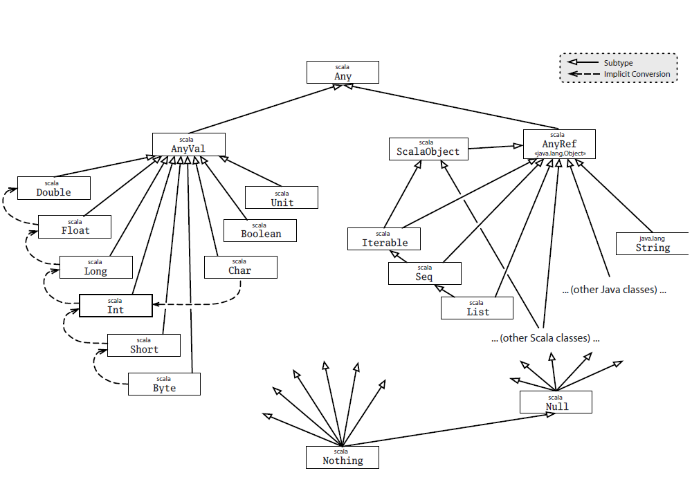
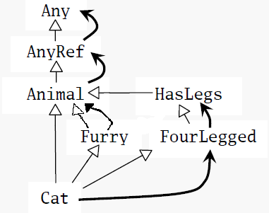

基础
入门
变量定义
val不可变变量；var可变变量。格式：
// 基本格式 val msg: java.lang.String = "Hello" // java.lang默认已经导入了 val msg: String = "Hello" // 自动推导类型 val msg = "Hello"
语句定义
Scala语句以分号结束，而且分号可以省略。默认一行结束了就是一行语句结束了，除非以下三种情况，会认为语句还没有结束：
- 行尾是一个不能放在行尾的字符。
- 下一行的开头是不能放在行头的字符。
-
()和[]里，这里面不能放多条语句。
这是两个：
val s = "hello"; println(s)
if (x < 2)
println("too small")
else
println("ok")
这是两个：
x + y
一个：
(x + y)
一个：
x + y + z
函数定义
取最大的函数，函数体的最后一行作为结果返回：
def max(x: Int, y: Int): Int = {
if (x > y) x else y
}
函数类型也能自动推导出来，可以省略。在递归函数的情况下，一定要明确地说明返回类型。如果函数体只有一行，那花括号也可以省略：
scala> def max(x: Int, y: Int) = if (x > y) x else y max: (x: Int, y: Int)Int
类型Unit对应Java中的void。即没有参数又没有返回结果的函数定义：
scala> def greet() = println("Hello")
greet: ()Unit
对于没有等号的方法来说返回类型一定是Unit。Scala可以把任何类型转为Unit，以下方法最后的String类结果会转为Unit并丢弃：
scala> def f(): Unit = "This String is lost!" f: ()Unit
有花括号但没有等号的方法默认为Unit，有了等号但没有类型会由编译器自动推导：
scala> def f() {"This String is lost!"}
f: ()Unit
scala> def f() = {"This String get returned!"}
f: ()java.lang.String
scala> f
res2: java.lang.String = This String get returned!
函数字面量（Function Literal）
函数字面量用=>来分隔参数表与函数体：
(x:Int, y:Int) => x + y
通过函数字面量来迭代处理参数的例子：
args.foreach( (arg: String) => println(arg) )
这里的String类型可以自动推导出来：
args.foreach( arg => println(arg) )
在这种字面量只有一行而且只有一个参数情况下，可以省掉参数列表：
args.foreach( println )
}}}
for循环
scala> for (i <- 0 to 10) print(i) 012345678910
方法与操作符
下面的语句产一个从0到5的集合：
scala> 0 to 5 res9: scala.collection.immutable.Range.Inclusive = Range(0, 1, 2, 3, 4, 5)
其实这个to是一个方法的调用。Scala中对于方法调用时，如果方法只有一个参数的话可以省略括号，原本的样子是：
(0).to(5)
scala中没有操作符的重载，因为操作符也是方法的名字：
1 + 2
相当于：
(1).+(2)
标识符
Scala在构成标识符方面有四种非常灵活的规则：
字母数字标识符（alphanumeric identifier）
字母数字标识符起始于一个字母或下划线，之后可以跟字母，数字，或下划线。美元符也被当作是字母，但是被保留作为Scala编译器产生的标识符之用。用户程序里的标识符不应该包含美元字符，尽管能够编译通过；但是这样做有可能导致与Scala编译器产生的标识符发生名称冲撞。
Scala遵循Java的驼峰式标识符习俗。尽管下划线在标识符内是合法的，但在Scala程序里并不常用，部分原因是为了保持与Java一致，同样也由于下划线在Scala代码里有许多其它非标识符用法。因此，最好避免使用像to_string，__init__，或name这样的标识符。
标识符结尾使用下划线的一个结果就是，如果你尝试写一个这样的定义：val name_: Int = ，你会收到一个编译器错误。编译器会认为你正常是定义一个叫做name_:的变量。要让它编译通过，你将需要在冒号之前插入一个额外的空格，如：val name_ : Int = 1。
字段，方法参数，本地变量，还有函数的驼峰式名称，应该以小写字母开始，如：length，flatMap，还有s。
类和特质的驼峰式名称应该以大写字母开始，如：BigInt，List，还有UnbalancedTreeMap。
Scala与Java的习惯不一致的地方在于常量名。Scala里，constant这个词并不等同于val。尽管val在被初始化之后的确保持不变，但它还是个变量。比方说，方法参数是val，但是每次方法被调用的时候这些val都可以代表不同的值。而常量更持久。比方说，scala.Math.Pi被定义为很接近实数π的双精度值，表示圆周和它的直径的比值。这个值不太可能改变，因此Pi显然是个常量。你还可以用常数去给一些你代码里作为幻数（magic number）要用到的值一个名字：文本值不具备解释能力，如果出现在多个地方将会变得极度糟糕。Java里，习惯上常量名全都是大写的，用下划线分隔单词，如MAX_VALUE或PI。Scala里，习惯只是第一个字母必须大写。因此，Java风格的常量名，如X_OFFSET，在Scala里也可以用，但是Scala的惯例是常数也用驼峰式风格，如XOffset。
操作符标识符（operator identifier）
由一个或多个操作符字符组成。操作符字符是一些如+，:，?，~或#的可打印的ASCII字符。以下是一些操作符标识符的例子：
+ ++ ::: <?> :->
Scala编译器将内部“粉碎”操作符标识符以转换成合法的的内嵌美元符的Java标识符。例如，标识符:->将在内部将被表达为：
$colon$minus$greater
若你想从Java代码访问这个标识符，就应使用这个内部表达。
Scala里的操作符标识符可以变得任意长，因此在Java和Scala间有一些小差别。Java里，输入x<-y将会被拆分成四个词汇符号，所以写成x < - y也没什么不同。Scala里，<-将被作为一个标识符拆分，而得到x <- y。如果你想要得到第一种解释，你要在<和-字符间加一个空格。这大概不会是实际应用中的问题，因为没什么人会在Java里写x<-y的时候不注意加空格或括号的。
混合标识符（mixed identifier）
混合标识符由字母数字组成，后面跟着下划线和一个操作符标识符。例如，unary_+被用做定义一元的+操作符的方法名。或者，myvar_=被用做定义赋值操作符的方法名。多说一句，混合标识符格式myvar_=是由Scala编译器产生的用来支持属性：property的。在以后的章节“有状态对象”中进一步说明。
文本标识符（literal identifier）
文本标识符是用反引号包括的任意字串。如：
`x` `<clinit>` `yield`
它的思路是你可以把任何运行时认可的字串放在反引号之间当作标识符。结果总是Scala标识符。即使包含在反引号间的名称是Scala保留字，这个规则也是有效的。在Java的Thread类中访问静态的yield方法是其典型的用例。你不能写Thread.yield()因为yield是Scala的保留字。然而，你仍可以在反引号里引用方法的名称，例如：
Thread.`yield`()
常用工具
类型参数化数组
长度为3的数组，存放的元素类型为String：
val gs: Array[String] = new Array[String](3)
scala> val gs = new Array[String](3)
gs: Array[String] = Array(null, null, null)
scala> gs(0) = "aa"
scala> gs(1) = "bb"
scala> gs(2) = "cc"
scala> gs.foreach(print)
aabbcc
scala> val ns = Array("11","22","33")
ns: Array[java.lang.String] = Array(11, 22, 33)
scala> ns.foreach(print)
112233
apply与update方法
对一个对象的后面加上括号的操作其实是调用了这个对象的apply方法。所以数组的元素索引操作其实是apply方法调用：
gs(0)
//相当于：
gs.apply(0)
val ns = Array("11","22","33")
//相当于：
val ns = Array.apply("11","22","33")
对带有括号并包括一到多个参数的变量赋值时，编译器使用对象的update方法对括号里的参数（索引值）和等号右边的对象执行调用：
gs(0) = "aa" //相当于： gs.update(0, "aa")
列表
与java.util.List不同，scala.List是不可变的。不可变的对象更加符合函数式风格。
scala> val ll = List(1,2,3) ll: List[Int] = List(1, 2, 3)
::（读作cons）把一个元素加到列表的头上； 用:::连起两个列表：
scala> 0 :: ll res12: List[Int] = List(0, 1, 2, 3) scala> val ll2 = List(4,5,6) ll2: List[Int] = List(4, 5, 6) scala> ll ::: ll2 res11: List[Int] = List(1, 2, 3, 4, 5, 6)
一个元素也没有的空列表用Nil表示，作为一个空的列表，它可以把其他的元素给串起来：
scala> val nl = 1 :: 2 :: 3 :: Nil nl: List[Int] = List(1, 2, 3)
List只能把元素加在头上，如果要加在后面的话，一个方法是在加到头上以后再调用reverse方法；还有一个方案是使用ListBuffer，它有append方法。
List常用方法
List() 或 Nil // 空List
List("Cool", "tools", "rule") // 创建带有三个值"Cool"，"tools"和"rule"的新List[String]
val thrill = "Will"::"fill"::"until"::Nil // 创建带有三个值"Will"，"fill"和"until"的新List[String]
List("a", "b") ::: List("c", "d") // 叠加两个列表（返回带"a"，"b"，"c"和"d"的新List[String]）
thrill(2) // 返回在thrill列表上索引为2（基于0）的元素（返回"until"）
thrill.count(s => s.length == 4) // 计算长度为4的String元素个数（返回2）
thrill.drop(2) // 返回去掉前2个元素的thrill列表（返回List("until")）
thrill.dropRight(2) // 返回去掉后2个元素的thrill列表（返回List("Will")）
thrill.exists(s => s == "until") // 判断是否有值为"until"的字串元素在thrill里（返回true）
thrill.filter(s => s.length == 4) // 依次返回所有长度为4的元素组成的列表（返回List("Will", "fill")）
thrill.forall(s => s.endsWith("1")) // 辨别是否thrill列表里所有元素都以"l"结尾（返回true）
thrill.foreach(s => print(s)) // 对thrill列表每个字串执行print语句（"Willfilluntil"）
thrill.foreach(print) // 与前相同，不过更简洁（同上）
thrill.head // 返回thrill列表的第一个元素（返回"Will"）
thrill.init // 返回thrill列表除最后一个以外其他元素组成的列表（返回List("Will", "fill")）
thrill.isEmpty // 说明thrill列表是否为空（返回false）
thrill.last // 返回thrill列表的最后一个元素（返回"until"）
thrill.length // 返回thrill列表的元素数量（返回3）
thrill.map(s => s + "y") // 返回由thrill列表里每一个String元素都加了"y"构成的列表（返回List("Willy", "filly", "untily")）
thrill.mkString(", ") // 用列表的元素创建字串（返回"will, fill, until"）
thrill.remove(s => s.length == 4) // 返回去除了thrill列表中长度为4的元素后依次排列的元素列表（返回List("until")）
thrill.reverse // 返回含有thrill列表的逆序元素的列表（返回List("until", "fill", "Will")）
thrill.sort((s, t) => s.charAt(0).toLowerCase < t.charAt(0).toLowerCase)
// 返回包括thrill列表所有元素，并且第一个字符小写按照字母顺序排列的列表（返回List("fill", "until", "Will")）
thrill.tail // 返回除掉第一个元素的thrill列表（返回List("fill", "until")）
方法关联性
所有以:结尾的方法其实是后一个操作数调用前一个操作数，所以：
0 :: ll // 其实是 ll.::(0) ll ::: ll2 // 其实是 ll2.:::(ll)
回到前面的串列表操作：
val nl = 1 :: 2 :: 3 :: Nil
如果没有最后的Nil，就变成了3.::(2)。因为数字没有::方法，这样就会报错。
元组（Tuple）
元组像列表，但可以放不同类型的元素。这样类似于Java Bean，但写起来更加简单。元组的类型按字段个数来识别，有2个字段的就是Tuple2、3个就是Tuple3，Scala最多支持到Tuple22：
scala> val pair = (99, "Luft") pair: (Int, java.lang.String) = (99,Luft)
访问字段通过_序号来实现。不能像数组一样用()的原因是：如果要用apply方法，那定义方法的时候就要声明返回类型，而同一个元组中元素的类型是不同的，所以写不出这个apply方法。
scala> print(pair._1) 99 scala> print(pair._2) Luft
集（Set）和映射（Map）
对于Map和Set，Scala都分别提供了可变和不变的版本（放一不同的包里）。可变版本的操作会在本地修改，不可变的版本会返回一个新的对象。一般默认会使用不可变版本。
虽然都提供了+=方法添加元素，但只可变实现都是返回一个新的对象。
Set
Set继承关系：

scala> var jetSet = Set("Boeing", "Airbus")
jetSet: scala.collection.immutable.Set[java.lang.String] = Set(Boeing, Airbus)
scala> jetSet += "Lear"
scala> println(jetSet.contains("Cessna"))
false
scala> println(jetSet)
Set(Boeing, Airbus, Lear)
有些情况下想要指定使用可变版本的：
scala> import scala.collection.mutable.Set
import scala.collection.mutable.Set
scala> val movieSet = Set("Hitch", "Poltergeist")
movieSet: scala.collection.mutable.Set[java.lang.String] = Set(Poltergeist, Hitch)
scala> movieSet += "Shrek"
res3: movieSet.type = Set(Shrek, Poltergeist, Hitch)
scala> println(movieSet)
Set(Shrek, Poltergeist, Hitch)
指定要使用HashSet：
scala> import scala.collection.immutable.HashSet
import scala.collection.immutable.HashSet
scala> val hashSet = HashSet("Tomatoes", "Chilies")
hashSet: scala.collection.immutable.HashSet[java.lang.String] = Set(Chilies, Tomatoes)
scala> println(hashSet + "Coriander")
Set(Chilies, Tomatoes, Coriander)
Map继承关系：
Map

默认的Map用不可变的类型：
scala> val romanNumberal = Map( 1 -> "I", 2 -> "II", 3 -> "III",
| 4 -> "IV", 5 -> "V")
romanNumberal: scala.collection.immutable.Map[Int,java.lang.String] = Map(5 -> V, 1 -> I, 2 -> II, 3 -> III, 4 -> IV)
scala> println(romanNumberal(4))
IV
使用一个可变的Map
scala> import scala.collection.mutable.Map import scala.collection.mutable.Map scala> val treasureMap = Map[Int, String]() treasureMap: scala.collection.mutable.Map[Int,String] = Map() scala> treasureMap += (1 -> "Go to inland.") res6: treasureMap.type = Map(1 -> Go to inland.) scala> treasureMap += (2 -> "Find big X on ground.") res7: treasureMap.type = Map(1 -> Go to inland., 2 -> Find big X on ground.) scala> treasureMap += (3 -> "Dig.") res8: treasureMap.type = Map(3 -> Dig., 1 -> Go to inland., 2 -> Find big X on ground.) scala> println(treasureMap(2)) Find big X on ground.
函数式风格
函数式风格极力避免使用变量（就是用到变量也尽量用val这种不可变的变量）与副作用。
典型的指令式风格
先来看一个指令式的for循环：
scala> val args = Array("11","22","33")
args: Array[java.lang.String] = Array(11, 22, 33)
scala> def printArgs(args: Array[String]): Unit = {
| var i = 0
| while (i < args.length) {
| println(args(i))
| i += 1
| }
| }
printArgs: (args: Array[String])Unit
去除变量的使用
通过去掉val的使用变得更加函数式风格：
scala> def printArgs(args: Array[String]): Unit = {
| for (arg <- args) println(arg)
| }
printArgs: (args: Array[String])Unit
当然更优雅的风格是这样的：
scala> def printArgs(args: Array[String]): Unit = {
| args.foreach(println)
| }
printArgs: (args: Array[String])Unit
去除副作用
光去掉了变量的使用还不是函数式的。因为这个例子中还有副作用：打印到输出流。
所以我们在这里把字符串的格式化与打印输出分成两个功能来做：
scala> def formatArgs(args: Array[String]) = args.mkString("\n")
formatArgs: (args: Array[String])String
scala> println(formatArgs(args))
11
22
33
这样才真正算是函数式风格。鼓励程序员尽量设计出没有副作用，没有变量的代码。
读取文本文件
一个读取文本文件的方法，统计每个行里的字符数：
import scala.io.Source
if (args.length > 0) {
for (line <- Source.fromFile(args(0)).getLines)
println(line.length + " " + line)
} else {
Console.err.println("Please enter filename")
}
执行一下：
--(morgan-laptop:pts/5)-(13-03-16 17:49:53)-(~/workspace/study/scala/tmp)
\-(morgan:%) >>> scala readFile.scala readFile.scala
22 import scala.io.Source
0
22 if (args.length > 0) {
48 for (line <- Source.fromFile(args(0)).getLines)
35 println(line.length + " " + line)
8 } else {
45 Console.err.println("Please enter filename")
1 }
执行的结束不错，但是没有排版……强化一下，先遍历一次得到最长的统计参数。
import scala.io.Source
def widthOfLength(s: String) = s.length.toString.length
if (args.length > 0) {
val lines = Source.fromFile(args(0)).getLines.toList
/* 找到最长的一行，不用for循环，
显得更加函数式一些 */
val longestLine = lines.reduceLeft(
(a, b) => if (a.length > b.length) a else b
)
val maxWidth = widthOfLength(longestLine)
for (line <- lines) {
val numSpaces = maxWidth - widthOfLength(line)
val padding = " " * numSpaces
println(padding + line.length + " | " + line)
}
} else {
Console.err.println("Please enter filename")
}
输出格式为：
--(morgan-laptop:pts/8)-(13-03-17 15:14:04)-(~/workspace/study/scala/tmp)
\-(morgan:%) >>> scala readFile.scala readFile.scala
22 | import scala.io.Source
0 |
55 | def widthOfLength(s: String) = s.length.toString.length
0 |
22 | if (args.length > 0) {
53 | val lines = Source.fromFile(args(0)).getLines.toList
0 |
36 | val longestLine = lines.reduceLeft(
45 | (a, b) => if (a.length > b.length) a else b
2 | )
42 | val maxWidth = widthOfLength(longestLine)
0 |
22 | for (line <- lines) {
48 | val numSpaces = maxWidth - widthOfLength(line)
31 | val padding = " " * numSpaces
47 | println(padding + line.length + " | " + line)
2 | }
8 | } else {
45 | Console.err.println("Please enter filename")
1 | }
基本类型
基本类型包括java.lang包下的String和scala包下的Byte、Short、Int、Long、Float、Double、Char、Boolean。还有在scala.runtime包下对应的包装器类Rich...。
如：Int对应的包装器类型为scala.runtime.RichInt。
字符串
除了和Java一样的字符串字面量表示方式以外，Scala还提供了原始字符串（raw string）方便照原文解读：
println("""Welcome to Ultamix 3000.
Type "HELP" for help.""")
输出的内容包括所有的转义字符和空格：
Welcome to Ultamix 3000.
Type "HELP" for help.
有些情况下希望在源代码里也能排版提好看一点，所以字符串里提供stripMargin方法可以通过管道符|来取得想要的部分：
println("""|Welcome to Ultamix 3000.
|Type "HELP" for help.""".stripMargin)
Welcome to Ultamix 3000. Type "HELP" for help.
符号
格式为'symb，这里的symb可以是任何字母或数字。这种字面量被直接映射为类scala.Symbol的实例，解释器调用工厂方法Symbol("symb")产生。符号变量是被限定（interned）的，如果同一个字面量出现两次，其实指向的是同一个Symble实例。
符号变量什么事情都做不了，只能显示自己的名字：
scala> val s = 'aSymbol s: Symbol = 'aSymbol scala> s.name res3: String = aSymbol
那符号能用来干嘛？典型应用是作为动态语言中的标签符。比如说，下面的函数用来更新记录，两个参数field是字段名、value是值：
scala> def updateRecordByName(field: Symbol, value: Any){ }
updateRecordByName: (field: Symbol, value: Any)Unit
Scala是静态语言，所以不可以随便写一个标识符：
scala> updateRecordByName(pcOK, "OK Computer")
<console>6: error : not fount: value pcOK
updateRecordByName: (field: Symbol, value: Any)Unit
这是就要用到符号了：
scala> updateRecordByName('pcOK, "OK Computer")
操作符与方法
操作符也是普通方法的另一种写法。方法可以当操作符写；操作符也可以当作方法写；操作符的重载也就是方法的重载。
中缀操作符（infix）
scala> val s = "Hello, world!"
s: java.lang.String = Hello, world!
scala> s indexOf 'o'
res6: Int = 4
scala> s indexOf ('o', 5)
res7: Int = 8
前缀操作符
前缀操作符以unary_开头，能有四种+、-、!、~分别用表示unary_+、unary_-、unary_!、unary_~：
scala> - 2.0 res8: Double = -2.0 scala> (2.0).unary_- res9: Double = -2.0
其他的符号就算定义了也不能作为前置操作符解释，如果定义了p.unary_*，在调用*p会被Scala解释为*.p。
后缀操作符
后缀操作符其实就是没有参数的函数。一般习惯上有副作用的话就加上括号，如：println()；如果没有副作用就不加括号，如：String.toLowerCase
scala> "Hello".toLowerCase res10: java.lang.String = hello scala> "Hello" toLowerCase res11: java.lang.String = hello
位移操作
左移（填零）、右移（填符号位）、无符号右移（填零）：
<< > >>>
对象相等性
操作符==与!=与Java中的不同，更加像Java中的equals比较是内容的含意是否相等。而且在Scala中不仅比较基本类型，也可以比较对象，甚至是不同类的对象也可以比较，也可以和null比不会有异常抛出：
scala> 1 == 2
res12: Boolean = false
scala> 1 != 2
res13: Boolean = true
scala> List(1, 2, 3) == List(1, 2, 3)
res14: Boolean = true
scala> List(1, 2, 3) == List(4, 5, 6)
res15: Boolean = false
scala> 1 == 1.0
res16: Boolean = true
scala> List(1, 2, 3) == "hello"
res17: Boolean = false
scala> List(1, 2, 3) == null
res18: Boolean = false
scala> null == List(1, 2, 3)
res19: Boolean = false
scala> ("he" + "llo") == "hello"
res20: Boolean = true
而且与Java中==和!=类似的比较是否是同一个实例的操作分别是eq和ne。
类
简单定义类与创建对象：
scala> class ChecksumAccumulator { }
defined class ChecksumAccumulator
scala> new ChecksumAccumulator
res0: ChecksumAccumulator = ChecksumAccumulator@91f1520
scala> class ChecksumAccumulator {
| var sum = 0
| }
defined class ChecksumAccumulator
scala> val acc = new ChecksumAccumulator
acc: ChecksumAccumulator = ChecksumAccumulator@501fdcfb
scala> val csa = new ChecksumAccumulator
csa: ChecksumAccumulator = ChecksumAccumulator@58f285cd
默认访问控制为public。
成员方法：
class ChecksumAccumulator {
private var sum = 0
def add(b: Byte): Unit = {
sum += b
}
def checksum(): Int = {
return ~(sum & 0xFF) + 1
}
}
Scala中参数都是val，不可变。
def add(b: Byte): Unit = {
// b = 1 // error, because b is val
sum += b
}
只有一行的方法体可以去掉花括号并放在函数头一行，方法会自动返回最后一行语句，不用加return：
class ChecksumAccumulator {
private var sum = 0
def add(b: Byte): Unit = sum += b
def checksum(): Int = ~(sum & 0xFF) + 1
}
没有返回的方法可以省略类型Unit与等号：
def add(b: Byte): Unit = sum += b
// 简化
def add(b: Byte) { sum += b }
创建新类型
我们以实现一个实数（rational number）类的过程作为例子，来说明类的实现细节。
实数由两部分组成：表示分子（numerator）和分母（denominator）。其中分母不能为零。能让小数部分得到了完全表达，没有舍入或估算。要模型化分数的行为，包括允许它们执行加，减，乘还有除运算。
- 要加两个分数，首先要获得公分母，然后才能把两个分子相加。
- 要乘两个分数，可以简单的两个分子相乘，然后两个分母相乘。
- 除法是把右操作数分子分母调换，然后做乘法。
- 一个分数加到另外一个分数上，产生的结果是一个新的分数。而原来的数不会被“改变”。
主构造器：primary constructor
如果类没有主体，就不需要指定一对空的大括号（当然你如果想的话也可以）。
class Rational(n: Int, d: Int)
在类名Rational之后括号里的n和d，被称为类参数（class parameter）。n和d并不是类中的字段，而是主构造器的两个参数。Scala编译器会收集这两个类参数并创造一个带同样的两个参数的主构造器（primary constructor）。Java类具有可以带参数的构造器，而Scala类可以直接带参数。
注意：Scala编译器将把你放在类内部的任何不是字段的部分或者方法定义的代码，编译进主构造器。例如：
scala> class Rational(n: Int, d: Int) { println("Created "+n+"/"+d) }
scala> new Rational(1, 2)
Created 1/2 res0: Rational = Rational@a0b0f5
你可以像这样打印输出一条消息，因为打印语句也在主构造器中。
先决条件（precondition）
先决条件是对传递给方法或构造器的值的限制，是调用者必须满足的需求。使用Predef包中的require方法。如果传入的值为真，require将正常返回。反之，require将通过抛出IllegalArgumentException来阻止对象被构造。
class Rational(n: Int, d: Int) {
require(d != 0)
}
字段
要注意的是：
scala> class Rational(n: Int, d: Int)
在前面主构造器部分已经提别提到：n和d并不是类中的字段，而是主构造器的两个参数。所以下面代码是无法访问到某个实例的n和d的：
def showRational(r: Rational): Rational = println("Rational: "+n+"/"+d)
所以又增加了两个字段，分别是numer和denom，并用类参数n和d初始化它们：
class Rational(n: Int, d: Int) {
require(d != 0)
val numer: Int = n
val denom: Int = d
}
在对象外面访问分子和分母：
scala> val r = new Rational(1, 2) r: Rational = 1 / 2 scala> r.numer res7: Int = 1 scala> r.denom res8: Int = 2
方法
添加加法运算，得到另外一个分数后返回一个新对象为二者的和：
class Rational(n: Int, d: Int) {
require(d != 0)
val numer: Int = n
val denom: Int = d
def add(that: Rational): Rational = new Rational(
numer * that.denom + that.numer * denom,
denom * that.denom
)
}
加法操作：
scala> val oneHalf = new Rational(1, 2) oneHalf: Rational = 1/2 scala> val twoThirds = new Rational(2, 3) twoThirds: Rational = 2/3 scala> oneHalf add twoThirds res0: Rational = 7/6
自指向
关键字this指向当前执行方法被调用的对象实例，或者如果使用在构造器里的话，就是正被构建的对象实例。
例如，我们考虑添加一个方法，lessThan，来测试给定的分数是否小于传入的参数：
def lessThan(that: Rational) = this.numer * that.denom < that.numer * this.denom
这里，this.numer指向lessThan被调用的那个对象的分子。你也可以去掉this前缀而只是写numer；着两种写法是相同的。
举一个不能缺少this的例子，考虑在Rational类里添加max方法返回指定分数和参数中的较大者：
def max(that: Rational) = if (this.lessThan(that)) that else this
这里，第一个this是冗余的，你写成(lessThan(that))也是一样的。但第二个this表示了当测试为假的时候的方法的结果；如果你省略它，就什么都返回不了了。
从构造器
有些时候一个类里需要多个构造器。Scala里主构造器之外的构造器被称为从构造器（auxiliary constructor）。Scala的从构造器开始于def this(...)。
Java里，构造器的第一个动作必须要么调用同类里的另一个构造器，要么直接调用超类的构造器。Scala的类里面，只有主构造器可以调用超类的构造器。Scala里更严格的限制实际上是权衡了更高的简洁度和与Java构造器相比的简易性所付出的代价之后作出的设计。
比方说，分母为1的分数只写分子的话就更为简洁。如，对于5/1来说，可以只是写成5。因此，如果不是写成Rational(5, 1)，客户程序员简单地写成Rational(5)或许会更好看一些。这就需要给Rational添加一个只带一个参数分子的从构造器并预先设定分母为1。
class Rational(n: Int, d: Int) {
require(d != 0)
val numer: Int = n
val denom: Int = d
def this(n: Int) = this(n, 1)
Rational的从构造器主体几乎完全是调用主构造器，直接传递了它的唯一的参数n作为分子和1作为分母。
私有字段和方法
分数的分子分母有时可以约掉，添加一个最大公约数的私有方法：
class Rational(n: Int, d: Int) {
require(d != 0)
private val g = gcd(n.abs, d.abs)
val numer = n / g
val denom = d / g
private def gcd(a: Int, b: Int): Int =
if (b == 0) a else gcd(b, a % b)
}
定义操作符
用通常的数学的符号替换add方法，同样实现一个*方法以实现乘法：
def +(that: Rational): Rational = new Rational( numer * that.denom + that.numer * denom, denom * that.denom def *(that: Rational): Rational = new Rational(numer * that.numer, denom * that.denom)
使用
scala> val x = new Rational(1, 2) x: Rational = 1/2 scala> val y = new Rational(2, 3) y: Rational = 2/3 scala> x.+(y) res33: Rational = 7/6 scala> x + y res32: Rational = 7/6
而且实现的加法和乘法都带有优先级（与Scala的操作符优先级相同）：
scala> x + x * y res34: Rational = 5/6 scala> (x + x) * y res35: Rational = 2/3 scala> x + (x * y) res36: Rational = 5/6
方法覆盖（override）
override修饰符表示覆盖之前的方法定义。Rational类里覆盖了toString方法的缺省的实现。如：
class Rational(n: Int, d: Int) { override def toString = n +"/"+ d }
方法定义前的override修饰符标示了之前的方法定义被重载；第10章会更进一步说明。现在分数显示得很漂亮了，所以我们去掉了前一个版本的Rational类里面的println除错语句。你可以在解释器里测试Rational的新行为：
scala> val x = new Rational(1, 3) x: Rational = 1/3 scala> val y = new Rational(5, 7) y: Rational = 5/7
方法重载（overload）
方法的参数表不同产生重载。
给每个数学方法都有两个版本了：一个带分数做参数，另一个带整数。
def +(that: Rational): Rational = new Rational(
numer * that.denom + that.numer * denom,
denom * that.denom
)
def +(i: Int): Rational = new Rational(numer + i * denom, denom)
def -(that: Rational): Rational = new Rational(
numer * that.denom - that.numer * denom,
denom * that.denom
)
def -(i: Int): Rational = new Rational(numer - i* denom, denom)
def *(that: Rational): Rational = new Rational(
numer * that.numer,
denom * that.denom
)
def *(i: Int): Rational = new Rational(numer * i, denom)
def /(that: Rational): Rational = new Rational(
numer * that.denom,
denom * that.numer
)
def /(i: Int): Rational = new Rational(numer, denom * i)
隐式转换
虽然现在可以写r * 2了，但是不能用2 * r这样的写法：
scala> val x = new Rational(2, 3) scala> 2 * r error: overloaded method value * with alternatives: (x: Double)Double <and> (x: Float)Float <and> (x: Long)Long <and> (x: Int)Int <and> (x: Char)Int <and> (x: Short)Int <and> (x: Byte)Int cannot be applied to (this.Rational)
出错的原因是因为Int类上没有重载我们自己建的Rational类乘法。
解决的方案是告诉Scala如何把Int类转换为Rational类，再加上修饰符implicit通知Scala编译器可以自动调用：
scala> implicit def intToRational(x: Int) = new Rational(x) scala> 2 * r res16: Rational = 4/3
隐式转换只能在定义的作用范围内起作用，如果隐式方法被定义在Rational类中，就不在解释器的作用范围内，所以要把它定义在解释器内。
完整的Rational代码
class Rational(n: Int, d: Int) {
require(d != 0)
private val g = gcd(n.abs, d.abs)
val numer = n / g
val denom = d / g
def this(n: Int) = this(n, 1)
def +(that: Rational): Rational = new Rational(
numer * that.denom + that.numer * denom,
denom * that.denom
)
def +(i: Int): Rational = new Rational(numer + i * denom, denom)
def -(that: Rational): Rational = new Rational(
numer * that.denom - that.numer * denom,
denom * that.denom
)
def -(i: Int): Rational = new Rational(numer - i* denom, denom)
def *(that: Rational): Rational = new Rational(
numer * that.numer,
denom * that.denom
)
def *(i: Int): Rational = new Rational(numer * i, denom)
def /(that: Rational): Rational = new Rational(
numer * that.denom,
denom * that.numer
)
def /(i: Int): Rational = new Rational(numer, denom * i)
def lessThan(that: Rational) =
this.numer * that.denom < that.numer * this.denom
def max(that: Rational) =
if (this.lessThan(that)) that else this
override def toString = n +"/"+ d
private def gcd(a: Int, b: Int): Int =
if (b == 0) a else gcd(b, a % b)
}
val x = new Rational(2, 3)
print(" x = "); println(x)
print("x * x = "); println(x * x)
print("x * 2 = "); println(x * 2)
implicit def intToRational(x: Int) = new Rational(x)
print("2 * x = "); println(2 * x)
单例对象
Scala中没有像Java那样的静态成员而是用单例对象（Singleton Object）来代替。
在定义格式基本上和类一样，除了了object关键字代替class：
object ObjNam{
// ...
}
而且Scala中的对象也可以继承类：
class Currency {}
object USD extends Currency{ }
与Java的区别
总结一下，Scala中的类如果对应到Java的类的话，Scala的对象和Java中的对象不是同一回事情，是另一个新的概念。
为了表达统一，我们把对应Java里对象的概念叫作“类的实例”。
这样“类”，“对象”,“类的实例”三个概念都有了明确的定义。
伴生对象
如果一个单例对象的名字和类一样，并且必须在同一个文件里。那它就是这个类的伴生对象（Companion Object），类是它的伴生类（Companion Class）。它们可以相互访问私有成员。
import scala.collection.mutable.Map
class ChecksumAccumulator {
private var sum = 0
def add(b: Byte) { sum += b }
def checksum(): Int = ~(sum & 0xFF) + 1
}
object ChecksumAccumulator {
private val cache = Map[String, Int]()
def caculate(s: String): Int = {
if (cache.contains(s))
cache(s)
else {
val acc = new ChecksumAccumulator
for (c <- s)
acc.add(c.toByte)
val cs = acc.checksum()
cache += (s -> cs)
cs
}
}
}
直接通过调用方法：
val res1 = ChecksumAccumulator.caculate("Every value is an object")
println(res1)
val res2 = ChecksumAccumulator.caculate("So simple!")
println(res2)
内建控制结构
if表达式
标题里叫它“表达式”，所以是有返回值的。if表达式返回执行分支的结果：
var filename = "default.txt" if (!args.isEmpty) filename = args(0)
更加函数式地写法，去掉变量：
val filename = if (!args.isEmpty) args(0) else "default.txt"
在没有副作用的情况下，用变量的目的就是为了存个值。而表达式就是算值的，所以直接拿表达式来用得了：
println(if (!args.isEmpty) args(0) else "default.txt")
while循环
用do-while算最大公约数：
def gcdLoop(x: Long, y: Long): Long = {
var a = x; var b = y
while (a != 0) {
val temp = a; a = b % a; b = temp
}
b
}
用while-do读取文件：
var line = ""
do {
line = readline()
println("Read: " + line)
} while (line != "")
while循环与Unit
注意这里没有叫它“表达式”。原因是它不会有返回值（类型为Unit，写作“()”），所以不是表达式。
scala> def greet() { println("HI") }
greet: ()Unit
scala> greet() == ()
<console>:9: warning: comparing values of types Unit and Unit using `==' will always yield true
greet() == ()
^
HI
res1: Boolean = true
scala> () == ""
<console>:8: warning: comparing values of types Unit and java.lang.String using `==' will always yield false
() == ""
^
res2: Boolean = false
scala> () != ""
<console>:8: warning: comparing values of types Unit and java.lang.String using `!=' will always yield true
() != ""
^
res3: Boolean = true
注意上面的警告信息：Unit与Unit进行相等运算永远为true；与String相等运算永远false；与String不相等运算永远为true。
现在说到重点了：Scala中var赋值操作也是Unit，而不是和Java一样返回变量值。所以下面这种Java中一直用到的写法在Scala中是会出问题的：
var line = ""
while ((line = readline()) != "") { // always true !!!
println("Read: " + line)
}
while循环与函数式风格
由于while没有返回值，所以常常被函数式语言舍弃。例如对于同样一个求最大公约数的函数，对比一下指令式与函数式的区别。
指令式，用循环：
def gcdLoop(x: Long, y: Long): Long = {
var a = x; var b = y
while (a != 0) {
val temp = a; a = b % a; b = temp
}
b
}
函数式，用递归：
def gcd(x: Long, y: Long): Long = if (y == 0) x else gcd(x, x % y)
while循环是没有返回值的，那就一定要用副作用：不是更新var就是写I/O之类的，不然浪费电么？
for表达式
Scale中的for表达式是遍历集合类的强大工具，包括了过滤与构造新集合的功能。
生成器（generator）
生成器语法item <- collection，对应每步遍历时集合中对应的项：
// Array[file]
val fileList = (new java.io.File(".")).listFiles
for (file <- fileList) println(file)
指定次数：
scala> for (i <- 1 to 4) print(i + " ") 1 2 3 4 scala> for (i <- 1 until 4) print(i + " ") 1 2 3
不推荐的风格，遍历时还要考虑下标是从0还是从1开始，会不会越界：
for (i <-0 to filesList.length -1) println(fileList(i))
for是表达式
for表达式之所以被称为“表达式”是因为它能产生令人感兴趣的值，一个其类型取决于for表达式<-子句的集合。
过滤器（filter）
只要处理以.scala结尾的文件：
for (file <- fileList)
if ( file.getName.endsWith(".scala") )
println(file)
Scala可以做得更好，给for循环加上选择器：
for (file <- fileList if file.getName.endsWith(".scala"))
println(file)
而且不止可以加一个，当然多个语句之间要用分号分隔：
for (
file <- fileList
if file.isFile;
if file.getName.endsWith(".scala")
) println(file)
for循环嵌套
通过多个<-得到嵌套：
def fileLines(file: java.io.File) =
scala.io.Source.fromFile(file).getlines.toList
def grep(pattern: String) =
for {
file <- filesList
if file.getName.endWith(".scala")
line <- fileLines(file)
if line.trim.matches(pattern)
} println(file + ": " + line.trim)
grep(".*gcd.*")
就像上面的代码那样，花括号可以代替小括号。但是替换的目的是什么呢？
花括号代替小括号
在前面提到过的Scala的断句原则时提到，在小括号里被认为是一条语句，所以多个for嵌套时要加上分号分隔；花括号里可以放多条，根据换行可以正确断句。
（流间）变量绑定（mid-stream）
请注意前面的代码段中重复出现的表达式line.trim。这不是个可忽略的计算，因此你或许想每次只算一遍。通过用等号=把结果绑定到新变量可以做到这点。绑定的变量被当作val引入和使用，不过不用带关键字val。
def grep(pattern: String) =
for {
file <- filesList if file.getName.endWith(".scala")
line <- fileLines(file)
trimmed = line.trim if line.trim.matches(pattern)
} println(file + ": " + trimmed)
制造新集合
到现在为止所有的例子都只是对枚举值进行操作然后就放过，除此之外，你还可以创建一个值去记住每一次的迭代。只要在for表达式之前加上关键字yield。
for表达式在每次执行的时候都会制造一个值，当for表达式完成的时候，结果将是一个包含了所有产生的值的集合。结果集合的类型基于枚举子句处理的集合类型。
对于for-yield表达式的语法是这样的：
for {子句} yield {循环体}
比如，下面的函数鉴别出.scala文件并保存在数组里：
def scalaFiles =
for {
file <- filesHere if file.getName.endsWith(".scala")
} yield file
for表达式在每次执行的时候都会制造一个值，本例中是file。本例中结果为Array[File]，因为filesHere是数组并且产生的表达式类型是File。
再来一个取每行长度的例子：
val forLineLengths =
for {
file <- filesList if file.getName.endWith(".scala")
line <- fileLines(file)
trimmed = line.trim if line.trim.matches(".*for.*")
} yield trimmed.length
try表达式与异常
抛出异常
throw new IllegalArgumentException
throw也是有结果类型的表达式，而且还可以转换成任何类型。所以可以写在赋值语句里。没有异常就是表达式的值，有异常了得到Nothing：
val half =
if ( n % 2 == 0 ) n/2
else throw new RuntimeException("n must be even")
捕获异常
捕获异常的语法选择catch子句的形式。这样设计的原因是为了与Scala很重要的部分：模式匹配（pattern matching）保持一致。模式匹配是一种很强大的特征，将在稍后概述并在另外的章节中详述。
import java.io.FileReader
import java.io.FileNotFoundException
import java.io.IOException
try {
val f = new FileReader("input.txt") // Use and close file
} catch {
case ex: FileNotFoundException => // Handle missing file
case ex: IOException => // Handle other I/O error
}
与Java的一个差别是Scala里不需要你捕获检查异常（checked exception）或把它们声明在throws子句中。如果你愿意，可以用@throws标注声明一个throws子句，但这不是必需的（详见“Scala结合Java”一章的“注解”一节）。
finally子句
没有啥要特别说明的：
import java.io.FileReader
val file = openFile()
try {
// ... do something ...
} finally {
file.close()
}
try-cache-finally产生的值
和其它大多数Scala控制结构一样，try-catch-finally也产生值。
下面的例子尝试拆分URL，但如果URL格式错误就使用缺省值。结果是，如果没有异常抛出，则对应于try子句；如果抛出异常并被捕获，则对应于相应的catch子句。如果异常被抛出但没被捕获，表达式就没有返回值。由finally子句计算得到的值，如果有的话，被抛弃。通常finally子句做一些清理类型的工作如关闭文件；他们不应该改变在主函数体或try的catch子句中计算的值。
import java.net.URL
import java.net.MalformedURLException
def urlFor(path: String) =
try { new URL(path) }
catch {
case e: MalformedURLException =>
new URL("http://www.scalalang.org")
}
而下面的两个例子一个第一个值为2，第二个值为1：
scala> def f(): Int = try { return 1 } finally { return 2 }
f: ()Int
scala> f()
res1: Int = 2
scala> def g(): Int = try { 1 } finally { 2 }
g: ()Int
scala> g()
res2: Int = 1
finally中的返回值会覆盖所有的结果，因此通常最好还是避免从finally子句中返回值。最好是把finally子句当作确保某些副作用，如关闭打开的文件。
match表达式
Scala的匹配表达式允许你在许多可选项（alternative）中做选择，就好象其它语言中的switch语句。通常说来match表达式可以让你使用任意的模式（pattern）做选择，后面会有专门的篇幅介绍。通用的模式可以稍等再说。目前，只要考虑使用match在若干可选项中做选择。
下面的例子里的脚本从参数列表读入食物名然后打印食物配料。match表达式检查参数列表的第一个参数firstArg。如果是字串"salt"就打印"pepper"；如果是"chips"，就打印"salsa"，如此递推。缺省情况用下划线_说明，这是常用在Scala里作为占位符表示完全不清楚的值的通配符。
val firstArg = if (args.length > 0) args(0) else ""
firstArg match {
case "salt" => println("pepper")
case "chips" => println("salsa")
case "eggs" => println("bacon")
case _ => println("huh?")
}
与Java的switch语句比，匹配表达式还有一些重要的差别：
- 任何种类的常量，或其他什么东西，都能用作Scala里的case，而不只是Java的case语句里面的整数类型和枚举常量。
- 每个可选项的最后并没有break。取而代之，break是隐含的，不会有从一个可选项转到另一个里面去的情况。这通常把代码变短了，并且避免了一些错误的根源。
- match表达式也能产生值。
val firstArg = if (args.length > 0) args(0) else ""
val friend = firstArg match {
case "salt" => "pepper"
case "chips" => "salsa"
case "eggs" => "bacon"
case _ => "huh?"
}
println(friend)
不要用break和contine
break和continue与函数字面量结合得不好，而且有效利用函数字面量可以让代码写得更加简短。
最简单的方式是用if替换每个every和用布尔变量替换每个break。布尔变量指代是否包含它的while循环应该继续。比如说，假设你正搜索一个参数列表去查找以“.scala”结尾但不以连号开头的字串。Java里你可以——如果你很喜欢while循环，break和continue——如此写：
int i = 0; // This is Java
boolean foundIt = false;
while (i < args.length) {
if (args[i].startsWith("-")) {
i = i + 1;
continue;
}
if (args[i].endsWith(".scala")) {
foundIt = true;
break;
}
i = i + 1;
}
如果要字面直译成Scala的代码，代之以执行一个if然后continue，你可以写一个if环绕while余下的全部内容。要去掉break，你可以增加一个布尔变量提示是否继续做下去，不过在这里你可以复用foundIt，基本就是这样：
var i = 0
var foundIt = false
while (i < args.length && !foundIt) {
if (!args(i).startsWith("-")) {
if (args(i).endsWith(".scala"))
foundIt = true
}
i = i + 1
}
这个版本与原来的Java代码非常像。所有的主要段落仍然存在并保持原顺序。有两个可重新赋值的变量及一个while循环。循环内有个i是否小于args.length的测试，然后检查"-"，然后检查".scala"。
如果要去掉代码里的var，可以尝试的一种方式是用递归函数重写循环。比方说，你可以定义带一个整数值做输入的searchFrom函数向前搜索，并返回想要的参数的索引。采用这种技巧的代码看上去会像这样：
def searchFrom(i: Int): Int =
if (i >= args.length) -1
else if (args(i).startsWith("-")) searchFrom(i + 1)
else if (args(i).endsWith(".scala")) i
else searchFrom(i + 1)
val i = searchFrom(0)
每个continue都被带有i + 1做参数的递归调用替换掉，有效地跳转到下一个整数。用递归替代了循环的编程风格更易于理解。
Scala编译器不会实际对代码7.17展示的代码生成递归函数。因为所有的递归调用都在尾调用：tail-call位置，编译器会产生出与while循环类似的代码。每个递归调用将被实现为回到函数开始位置的跳转。尾调用优化将在后面用另外篇幅讨论。
变量作用域
大括号通常引入了一个新的范围，所以任何定义在打括号里的东西在括号之后就脱离了范围。这条规则有几个例外，因为在Scala里有时候你可以用大括号代替小括号。表达式语法的替代品是这种使用大括号例子的其中之一。
本地变量：local variable。对于它们被定义的函数来说是“本地”的。每次函数被调用的时候，一整套全新的本地变量将被使用。 一旦变量被定义了，你就不可以在同一个范围内定义同样的名字。比如，下面的脚本不会被编译通过：
val a = 1 val a = 2 // Does not compile println(a)
然而，你可以在一个内部范围内定义与外部范围里名称相同的变量（注意之在Java里不行）。下列脚本将编译通过并可以运行。内部变量被说成是遮蔽（shadow）了同名的外部变量，因为在内部范围内外部变量变得不可见了：
val a = 1;
{
val a = 2 // Compiles just fine
println(a)
}
println(a)
在解释器里看上去像是遮蔽的东西：
scala> val a = 1 a: Int = 1 scala> val a = 2 a: Int = 2 scala> println(a) 2
在理论上，解释器在每次你输入新的语句时都创建了一个新的嵌套范围。因此，你可以把之前解释的代码虚拟化认为是
val a = 1;
{
val a = 2;
{
println(a)
}
}
重构指令式风格的代码
通过指令式风格输出乘法表：
def printMultiTable() {
var i = 1
// only i in scope here
while (i <= 10) {
var j = 1
// both i and j in scope here
while (j <= 10) {
val prod = (i * j).toString
// i, j, and prod in scope here
var k = prod.length
// i, j, prod, and k in scope here
while (k < 4) {
print(" ")
k += 1
}
print(prod)
j += 1
}
// i and j still in scope; prod and k out of scope
println()
i += 1
}
// i still in scope; j, prod, and k out of scope
}
代码在两个方面显示出了指令式风格。
首先，调用printMultiTable有副作用：在标准输出上打印乘法表。在函数式风格中，我们重构了函数，让它把乘法表作为字串返回。由于函数不再执行打印，我们把它重命名为multiTable。正如前面提到过的，没有副作用的函数的一个优点是它们很容易进行单元测试。要测试printMultiTable，你需要重定义print和println从而能够检查输出的正确性。测试multiTable就简单多了，只要检查结果即可。
// Returns a row as a sequence
def makeRowSeq(row: Int) =
for (col <- 1 to 10) yield {
val prod = (row * col).toString
val padding = " " * (4 - prod.length)
padding + prod
}
// Returns a row as a string
def makeRow(row: Int) = makeRowSeq(row).mkString
// Returns table as a string with one row per line
def multiTable() = {
val tableSeq = // a sequence of row strings
for (row <- 1 to 10)
yield makeRow(row)
tableSeq.mkString("\n")
}
printMultiTable里另一个揭露其指令式风格的信号来自于它的while循环和var。与之相对，multiTable函数使用了val，for表达式，帮助函数：helper function，并调用了mkString。
我们提炼出两个帮助函数makeRow和makeRowSeq，使代码容易阅读。
函数makeRowSeq使用for表达式从1到10枚举列数。这个for函数体计算行和列的乘积，决定乘积前占位的空格，并生成由占位空格，乘积字串叠加成的结果。for表达式的结果是一个包含了这些生成字串作为元素的序列（scala.Seq的某个子类）。
另一个帮助函数makeRow仅仅调用了makeRowSeq返回结果的mkString函数。叠加序列中的字串把它们作为一个字串返回。
multiTable方法首先使用一个for表达式的结果初始化tableSeq，这个for表达式从1到10枚举行数，对每行调用makeRow获得该行的字串。因为字串前缀yield关键字，所以表达式的结果就是行字串的序列。现在仅剩下的工作就是把字串序列转变为单一字串。mkString的调用完成这个工作，并且由于我们传递进去"\n"，因此每个字串结尾插入了换行符。
函数与闭包
方法（method）
方法是被定义为某个对象成员的函数，这是最常用的形式。如下面这个工具检查文件中超过指定长度的行：
import scala.io.Source
object LongLines {
def processFile(filename: String, width: Int) {
val source = Source.fromFile(filename)
for (line <- source.getLines)
processLine(filename, width, line)
}
private def processLine(filename: String,
width: Int, line: String) {
if (line.length > width)
println(filename +": "+ line.trim)
}
}
再定义了一个application以后，就可以在shell中调用它了，把第一个命令行参数当作行长度，并把后续的参数解释为文件名：
object FindLongLines {
def main(args: Array[String]) {
val width = args(0).toInt
for (arg <- args.drop(1))
LongLines.processFile(arg, width)
}
}
调用，查找一行长度超过45个字符的行：
$ scala FindLongLines 45 LongLines.scala
LongLines.scala: def processFile(filename: String, width: Int) {
本地函数
Java里通过定义private方法来限制访问。在Scala里还可以把方法定义在另一个函数里来限制只有所在的代码块能访问：
def processFile(filename: String, width: Int) {
def processLine(filename: String,
width: Int, line: String) {
if (line.length > width)
print(filename +": "+ line)
}
val source = Source.fromFile(filename)
for (line <- source.getLines) {
processLine(filename, width, line)
}
}
还可以省掉filename和width这两个参数的传递：
import scala.io.Source
object LongLines {
def processFile(filename: String, width: Int) {
def processLine(line: String) {
if (line.length > width)
print(filename +": "+ line)
}
val source = Source.fromFile(filename)
for (line <- source.getLines)
processLine(line)
}
}
头等函数与函数字面量（literal）
Scala拥有头等函数（first-class function），除了定义函数与调用函数外，还可以写成没有名字的函数字面量（literal）。
函数字面量直接作为一段文本被编译进一个类中，等到运行时被实例化为函数值（function value）。
任何函数值都是某个扩展了若干scala包的FunctionN特质之一的类的实例，如Function0是没有参数的函数，Function1是有一个参数的函数等等。每个FunctionN特质有一个apply方法用来调用函数。
简单例子：
(x: Int) => x + 1
=>指明这个函数把左边的东西（任何整数x）转变成右边的东西（x + 1）。所以，这是一个把任何整数x映射为x + 1的函数。
函数值是对象，所以如果你愿意可以把它们存入变量。它们也是函数，所以你可以使用通常的括号函数调用写法调用它们。以下是这两种动作的例子：
scala> var increase = (x: Int) => x + 1 increase: (Int) => Int = <function> scala> increase(10) res0: Int = 11
本例中，因为increase是var，你可以在之后重新赋给它不同的函数值。
scala> increase = (x: Int) => x + 9999 increase: (Int) => Int = <function> scala> increase(10) res2: Int = 10009
如果你想在函数文本中包括超过一个语句，用大括号包住函数体，一行放一个语句，就组成了一个代码块。与方法一样，当函数值被调用时，所有的语句将被执行，而函数的返回值就是最后一行产生的那个表达式。
scala> increase = (x: Int) => {
| println("We")
| println("are")
| println("here!")
| x + 1
| }
increase: (Int) => Int = <function>
scala> increase(10)
We
are
here!
res4: Int = 11
许多Scala库都提供了结合函数字面量的机制。例如，所有的集合类都能用到foreach方法和filter方法：
scala> val someNumbers = List(-11, -10, -5, 0, 5, 10) someNumbers: List[Int] = List(-11, -10, -5, 0, 5, 10) scala> someNumbers.foreach((x: Int) => println(x)) -11 -10 -5 0 5 10
函数字面量的短格式
Scala提供了许多方法去除冗余信息并把函数文本写得更简短。
一种让函数文本更简短的方式是去除参数类型：
scala> someNumbers.filter((x) => x > 0) res7: List[Int] = List(5, 10)
根据someNumbers编译器知道x一定是整数，因为它看到你立刻使用了这个函数过滤整数列表（暗示）。这被称为目标类型化（target typing），。目标类型化的精确细节并不重要。你可以简单地从编写一个不带参数类型的函数文本开始，并且，如果编译器不能识别，再加上类型。几次之后你就对什么情况编译器能或不能解开谜题有感觉了。
第二种去除无用字符的方式是省略类型是被推断的参数之外的括号。前面例子里，x两边的括号不是必须的：
scala> someNumbers.filter(x => x > 0) res8: List[Int] = List(5, 10)
占位符语法（Placeholder syntax）
如果想让函数文本更简洁，可以把下划线当做一个或更多参数的占位符，只要每个参数在函数文本内仅出现一次，也就是说，在这种情况下每个下划线都代表一个不同的参数。
比如，_ > 0对于检查值是否大于零的函数来说就是非常短的标注：
scala> someNumbers.filter(_ > 0) res9: List[Int] = List(5, 10)
可以把下划线看作表达式里需要被“填入”的“空白”。相当于：
scala> someNumbers.filter(x => x > 0) res10: List[Int] = List(5, 10)
有时编译器有可能没有足够的信息推断缺失的参数类型。如只是写：
scala> val f = _ + _
<console>:4: error: missing parameter type for expanded
function ((x$1, x$2) => x$1.$plus(x$2))
val f = _ + _
^
这种情况下使用冒号指定类型：
scala> val f = (_: Int) + (_: Int) f: (Int, Int) => Int = <function> scala> f(5, 10) res11: Int = 15
部分应用函数（partially applied function）
下划线不仅能代替一个参数，还可以代替整个参数列表：
someNumbers.foreach(println(_))
或简化为：
someNumbers.foreach(println _)
住要在函数名和下划线之间留一个空格，因为不这样做编译器会认为在调用名为println_的方法。
Scala把短格式直接看作是你输入了下列代码：
someNumbers.foreach(x => println(x))
以这种方式使用下划线时，你就正在写一个偏应用函数（partially applied function）。Scala里，当你调用函数，传入任何需要的参数，你就是在把函数应用到参数上。如，给定下列函数：
scala> def sum(a: Int, b: Int, c: Int) = a + b + c sum: (Int,Int,Int)Int
你就可以把函数sum应用到参数1，2和3上，如下：
scala> sum(1, 2, 3) res12: Int = 6
偏应用函数是一种表达式，你不需要提供函数需要的所有参数。代之以仅提供部分，或不提供所需参数。比如，要创建不提供任何三个所需参数的调用sum的偏应用表达式，只要在“sum”之后放一个下划线即可。然后可以把得到的函数存入变量。举例如下：
scala> val a = sum _ a: (Int, Int, Int) => Int = <function>
有了这个代码，Scala编译器以偏应用函数表达式，sum _，实例化一个带三个缺失整数参数的函数值，并把这个新的函数值的索引赋给变量a。当你把这个新函数值应用于三个参数之上时，它就转回头调用sum，并传入这三个参数：
scala> a(1, 2, 3) res13: Int = 6
实际发生的事情是这样的：
名为a的变量指向一个函数值对象。这个函数值是由Scala编译器依照偏应用函数表达式sum _，自动产生的类的一个实例。
编译器产生的类有一个apply方法带三个参数（产生的类扩展了特质Function3，定义了三个参数的apply方法）。之所以带三个参数是因为sum _表达式缺少的参数数量为三。Scala编译器把表达式a(1,2,3)翻译成对函数值的apply方法的调用，传入三个参数1，2，3。因此a(1,2,3)是下列代码的短格式：
scala> a.apply(1, 2, 3) res14: Int = 6
Scala编译器根据表达式sum _自动产生的类里的apply方法，简单地把这三个缺失的参数前转到sum，并返回结果。本例中apply调用了sum(1,2,3)，并返回sum返回的，6。
这种一个下划线代表全部参数列表的表达式的另一种用途，就是把它当作转换def为函数值的方式。例如，如果你有一个本地函数，如sum(a: Int, b: Int, c: Int): Int，你可以把它“包装”在apply方法具有同样的参数列表和结果类型的函数值中。当你把这个函数值应用到某些参数上时，它依次把sum应用到同样的参数，并返回结果。尽管不能把方法或嵌套函数赋值给变量，或当作参数传递给其它方法，但是如果你把方法或嵌套函数通过在名称后面加一个下划线的方式包装在函数值中，就可以做到了。
现在，尽管sum _确实是一个偏应用函数，或许对你来说为什么这么称呼并不是很明显。这个名字源自于函数未被应用于它所有的参数。在sum _的例子里，它没有应用于任何参数。不过还可以通过提供某些但不是全部需要的参数表达一个偏应用函数。举例如下：
scala> val b = sum(1, _: Int, 3) b: (Int) => Int = <function>
这个例子里，你提供了第一个和最后一个参数给sum，但中间参数缺失。因为仅有一个参数缺失，Scala编译器会产生一个新的函数类，其apply方法带一个参数。在使用一个参数调用的时候，这个产生的函数的apply方法调用sum，传入1，传递给函数的参数，还有3。如下：
scala> b(2) // b.apply调用了sum(1,2,3) res15: Int = 6 scala> b(5) // b.apply调用了sum(1,5,3) res16: Int = 9
如果你正在写一个省略所有参数的偏应用程序表达式，如println _或sum _，而且在代码的那个地方正需要一个函数，你可以去掉下划线从而表达得更简明。例如，代之以打印输出someNumbers里的每一个数字：
val someNumbers = List(-11, -10, -5, 0, 5, 10) someNumbers.foreach(println _)
你可以只是写成：
someNumbers.foreach(println)
最后一种格式仅在需要写函数的地方，如例子中的foreach调用，才能使用。编译器知道这种情况需要一个函数，因为foreach需要一个函数作为参数传入。在不需要函数的情况下，尝试使用这种格式将引发一个编译错误。举例如下：
scala> val c = sum
<console>:5: error: missing arguments for method sum...
follow this method with `_' if you want to treat it as
a partially applied function
val c = sum
^
scala> val d = sum _
d: (Int, Int, Int) => Int = <function>
scala> d(10, 20, 30)
res17: Int = 60
为什么要使用尾下划线？ Scala的偏应用函数语法凸显了Scala与经典函数式语言如Haskell或ML之间，设计折中的差异。在经典函数式语言中，偏应用函数被当作普通的例子。更进一步，这些语言拥有非常严格的静态类型系统能够暴露出你在偏应用中可能犯的所有错误。Scala与指令式语言如Java关系近得多，在这些语言中没有应用所有参数的方法会被认为是错误的。进一步说，子类型推断的面向对象的传统和全局的根类型接受一些被经典函数式语言认为是错误的程序。
举例来说，如果你误以为List的drop(n: Int)方法如tail()，那么你会忘记你需要传递给drop一个数字。你或许会写，println(drop)。如果Scala采用偏应用函数在哪儿都OK的经典函数式传统，这个代码就将通过类型检查。然而，你会惊奇地发现这个println语句打印的输出将总是<function>！可能发生的事情是表达式drop将被看作是函数对象。因为println可以带任何类型对象，这个代码可以编译通过，但产生出乎意料的结果。
为了避免这样的情况，Scala需要你指定显示省略的函数参数，尽管标志简单到仅用一个_。Scala允许你仅在需要函数类型的地方才能省略这个仅用的_。
闭包（Closures）
函数不仅可以用到参数：
(x: Int) => x + more // how much more?
more是个自由变量（free variable），因为函数文本自身没有给出其含义。相对的，x变量是一个绑定变量（bound variable），因为它在函数的上下文中有明确意义：被定义为函数的唯一参数，一个Int。如果你尝试独立使用这个函数文本，范围内没有任何more的定义，编译器会报错说：
scala> (x: Int) => x + more
<console>:5: error: not found: value more
(x: Int) => x + more
^
另一方面，只要有一个叫做more的什么东西同样的函数文本将工作正常：
scala> var more = 1 more: Int = 1 scala> val addMore = (x: Int) => x + more addMore: (Int) => Int = <function> scala> addMore(10) res19: Int = 11
依照这个函数文本在运行时创建的函数值（对象）被称为闭包（closure）。名称源自于通过“捕获”自由变量的绑定对函数文本执行的“关闭”行动。
不带自由变量的函数文本，如(x: Int) => x + 1，被称为封闭术语：closed term，这里术语：term指的是一小部分源代码。因此依照这个函数文本在运行时创建的函数值严格意义上来讲就不是闭包，因为(x: Int) => x + 1在编写的时候就已经封闭了。
任何带有自由变量的函数文本，如(x: Int) => x + more，都是开放术语：open term。因此，任何依照(x: Int) => x + more在运行期创建的函数值将必须捕获它的自由变量，more，的绑定。由于函数值是关闭这个开放术语(x: Int) => x + more的行动的最终产物，得到的函数值将包含一个指向捕获的more变量的参考，因此被称为闭包。
如果more在闭包创建之后被改变了闭包会反映这个变化。如下：
scala> more = 9999 more: Int = 9999 scala> addMore(10) res21: Int = 10009
直觉上，Scala的闭包捕获了变量本身，而不是变量指向的值。相对的，Java的内部类根本不允许你访问外围范围内可以改变的变量，因此到底是捕获了变量还是捕获了它当前具有的值就没有差别了。
反过来也同样。闭包对捕获变量作出的改变在闭包之外也可见：
scala> val someNumbers = List(-11, -10, -5, 0, 5, 10) someNumbers: List[Int] = List(-11, -10, -5, 0, 5, 10) scala> var sum = 0 sum: Int = 0 scala> someNumbers.foreach(sum += _) scala> sum res23: Int = -11
上面的代码中变量sum不在函数字面量sun += _（完整形式为：(x) => sum += x）里，所以这也是一个闭包的应用。
对于会有不同实例的场景，如：本地变量，闭包会对应到创建时关联的那个变量。
例如，以下是创建和返回“递增”闭包的函数：
def makeIncreaser(more: Int) = (x: Int) => x + more
每次函数被调用时都会创建一个新闭包。每个闭包都会访问闭包创建时外部的more变量。
scala> val inc1 = makeIncreaser(1) inc1: (Int) => Int = <function> scala> val inc9999 = makeIncreaser(9999) inc9999: (Int) => Int = <function>
结果依赖于闭包被创建时more是如何定义的：
scala> inc1(10) res24: Int = 11 scala> inc9999(10) res25: Int = 10009
尽管本例中more是一个已经返回的方法调用的参数也没有区别。Scala编译器在这种情况下重新安排了它以使得捕获的参数继续存在于堆中，而不是堆栈中，因此可以保留在创建它的方法调用之外。这种重新安排的工作都是自动关照的，因此你不需要操心。请任意捕获你想要的变量：val，var，或参数。
重复参数
Scala允许你指明函数的最后一个参数可以是重复的。这可以允许客户向函数传入可变长度参数列表。想要标注一个重复参数，在参数的类型之后放一个星号。例如：
scala> def echo(args: String*) =
| for (arg <- args) println(arg)
echo: (String*)Unit
这样定义，echo可以被零个至多个String参数调用：
scala> echo()
scala> echo("one")
one
scala> echo("hello", "world!")
hello
world!
函数内部，重复参数的类型是声明参数类型的数组。因此，echo函数里被声明为类型String*的args的类型实际上是Array[String]。然而，如果你有一个合适类型的数组，并尝试把它当作重复参数传入，你会得到一个编译器错误：
scala> val arr = Array("What's", "up", "doc?")
arr: Array[java.lang.String] = Array(What's, up, doc?)
scala> echo(arr)
<console>:7: error: type mismatch;
found : Array[java.lang.String]
required: String
echo(arr)
^
要实现这个做法，你需要在数组参数后添加一个冒号和一个_*符号，像这样：
scala> echo(arr: _*) What's up doc?
这个标注告诉编译器把arr的每个元素当作参数，而不是当作单一的参数传给echo。
尾递归（tail recursive）
Scala编译器可以应用一个重要的优化。注意递归调用是函数体执行的最后一件事，那么函数在它们最后一个动作调用自己的函数。这被称为尾递归。
Scala编译器检测到尾递归就用新值更新函数参数，然后把它替换成一个回到函数开头的跳转。这样减小了递归调用的开销。简单地说，就是每次调用不会用新的栈，而是在原来的框架内。
递归经常是比基于循环的更优美和简明的方案。如果方案是尾递归，就无须付出任何运行期开销。
跟踪尾递归函数
尾递归函数将不会为每个调用制造新的堆栈框架；所有的调用将在一个框架内执行。所以在调试的时候会比较怪。
例如，这个函数调用自身若干次之后抛出一个异常：
def boom(x: Int): Int =
if (x == 0) throw new Exception("boom!")
else boom(x - 1) + 1
这个函数不是尾递归，因为在递归调用之后执行了递增操作。如果执行它，你会得到预期的：
scala> boom(3) java.lang.Exception: boom! at .boom(<console>:5) at .boom(<console>:6) at .boom(<console>:6) at .boom(<console>:6) at .<init>(<console>:6) ...
如果你现在修改了boom从而让它变成尾递归：
def bang(x: Int): Int =
if (x == 0) throw new Exception("bang!")
else bang(x - 1)
你会得到：
scala> bang(5) java.lang.Exception: bang! at .bang(<console>:5) at .<init>(<console>:6) ...
这回，你仅看到了bang的一个堆栈框架。或许你会认为bang在调用自己之前就崩溃了，但这不是事实。如果你认为你会在看到堆栈跟踪时被尾调用优化搞糊涂，你可以用开关项关掉它：
-g:notailcalls
把这个参数传给scala的shell或者scalac编译器。定义了这个选项，你就能得到一个长长的堆栈跟踪了：
scala> bang(5) java.lang.Exception: bang! at .bang(<console>:5) at .bang(<console>:5) at .bang(<console>:5) at .bang(<console>:5) at .bang(<console>:5) at .bang(<console>:5) at .<init>(<console>:6) ...
尾递归的局限
Scala里尾递归的使用局限很大，因为JVM指令集使实现更加先进的尾递归形式变得很困难。Scala仅优化了直接递归调用使其返回同一个函数。如果递归是间接的，就像在下面的例子里两个互相递归的函数，就没有优化的可能性了：
def isEven(x: Int): Boolean =
if (x == 0) true else isOdd(x - 1)
def isOdd(x: Int): Boolean =
if (x == 0) false else isEven(x - 1)
同样如果最后一个调用是一个函数值你也不能获得尾调用优化。请考虑下列递归代码的实例：
val funValue = nestedFun _
def nestedFun(x: Int) {
if (x != 0) { println(x); funValue(x - 1) }
}
funValue变量指向一个实质是包装了nestedFun的调用的函数值。当你把这个函数值应用到参数上，它会转向把nestedFun应用到同一个参数，并返回结果。因此你或许希望Scala编译器能执行尾调用优化，但在这个例子里做不到。因此，尾调用优化受限于方法或嵌套函数在最后一个操作调用本身，而没有转到某个函数值或什么其它的中间函数的情况。
动态成员
静态类型不光是变量类型是确定的，还有比如在使用qual.sel时，sel 这个属性或是方法(Scala的访问一致性，属性和方法有时候并没有那么大的区别)必须在qual的类型中声明了的。
Scala 思考再三还是加入了 Dynamic Types，这个特性在 Scala 2.9 中是试验性的，必须用-Xexperimental进行开启，到了 Scala 2.10.0 中，只有代码中 import scala.language.dynamics就可用了，或是编译时加-language:dynamics选项。
虽然 Scala 2.10.0 加进了 Dynamic Types 特性，但 Scala 仍然是静态类型的语言，因为在编译器同样会检查多出来的类型。
有了 Dynamic Types 之后，Scala 又可更 DSL 了，方法名的动态上可以让它随时包括深刻的业务含义。相比 Java 的 DSL 的能力就太逊了，我们几乎无法在 Java 面前提 DSL 这回事。
通俗点讲动态类型的类必须继承自Dynamic。所有的变化就在下面这四个方法中：
selectDynamic
updateDynamic
applyDynamic
applyDynamicNamed
-
当使用
qual.sel，而Qual类未定义sel属性或方法时，会调用selectDynamic(method: String)方法。 -
当
qual.name = "Unmi"时会调用类似updateDynamic(method: String)(args: Any)这样的方法。 -
还有
applyDynamic，applyDynamicNamed这两个方法的自动调用。
看个完整的例子，我不打算把上面四个方法的应用规则分开来演示：
import scala.language.dynamics
class Person extends Dynamic{
def selectDynamic(method: String){
println(s"selectDynamic->$method called\n")
}
def applyDynamic(method: String)(args: Any*){
println(s"applyDynamic->$method called, args: $args\n")
}
def updateDynamic(method: String)(args: Any){
println(s"updateDynamic->$method called, args: $args\n")
}
def applyDynamicNamed(method: String)(args: (String, Any)*) {
println(s"applyDynamicNamed->$method called, args: $args")
for((key, value) <- args){
println(s"key: $key, value: $value")
}
}
}
val p = new Person
p.sayHello //calll selectDynamic
p.config("Hello","Unmi") //call applyDynamic
p.products = ("iPhone","Nexus") //call updateDynamic
p.showInfo(screenName="Unmi", email="fantasia@sina.com") //call applyDynamicNamed
上面对p的每一个调用都说明了会委派给哪个动态方法，执行结果输出是：
selectDynamic->sayHello called applyDynamic->config called, args: WrappedArray(Hello, Unmi) updateDynamic->products called, args: (iPhone,Nexus) applyDynamicNamed->showInfo called, args: WrappedArray((screenName,Unmi), (email,fantasia@sina.com)) key: screenName, value: Unmi key: email, value: fantasia@sina.com
现在来看发生了什么，Person继承自Dynamic，并且有引入 scala.language.dynamics。对p调用的方法(属性)都不存在，但是都调用到了正常的动态方法。所以仍然要对这四个动态方法(确切的讲是四种类型的方法，因为比如你可以定义多个不同的updateDynamic方法，其余三个也同此) 分别加以说明。
selectDynamic
在调用找不到了无参方法时，会去寻找它，调用效果如下：
p.sayHello也可以写成p.selectDynamic("sayHello")
也就是说编译器在看到p.sayHello调用会根据selectDynamic(method: String)。相当于创建了方法def sayHello = .......，也就是把动态方法selectDynamic(method: String)换成sayHello。所以说 Scala 的Dynamic类中的xxxDynamic 方法相当是模板方法。
applyDynamic，updateDynamic和applyDynamicNamed这三个方法第二个括号中的参数类型，或个数需根据实际应用来定。这四个动态方法的第一个括号中的参数都是动态调用时的方法名。
applyDynamic
在进行有参数的方法调用时，会去找寻它，调用效果如下：
p.config("Hello", "Unmi")可以写成p.applyDynamic("config")("Hello", "Unmi")
还是这么理解: 把这个动态方法定义的方法名和第一个括号与参数替换成调用的方法名就知道怎么回事，例如把：
def applyDynamic(method: String)(args: Any*)中的applyDynamic(method: String)替换成被调用方法名config，就是：
def config(args: Any*) //p.config("Hello", "Unmi") 要调用的就是这么个方法
所以第二个括号中的参数由你自己来定，比如说想这么调用p.config("Hello", 100, 30)，那么你可的动态方法可以这么定义：
def applyDynamic(method: String)(greeting: String, high: Int, low: Int) { ...... }
这个规则同样适用于updateDynamic和applyDynamicNamed这两个方法。
updateDynamic
等号赋值操作时会调用updateDynamic方法，调用效果如下：
p.products = ("iPhone", "Nexus")可写成p.updateDynamic("products")(("iPhone", "Nexus"))，按照同样的理解方法，相当于Person中定义了def products(args: Any) 方法。
applyDynamicNamed
同样是apply开头，所以这个方法是对applyDynamic方法的补充，即使没有 applyDynamicNamed，单用applyDynamic也能达成我们的要求。applyDynamicNamed 只是让你用命名参数调用时方便，也就是像：
p.showInfo(screenName="Unmi", email="fantasia@sina.com")
这样用命名参数的方式来调用动态方法时会调用updateDynamicNamed 方法。有了这个方法在命名传递参数就方便处理key/value值。
这四个方法在一个动态类中只能分别定义一个版本，否则会产生二义性，这和普通方法的重载不一样的。柯里化后的函数第二个括号中的参数可根据实际调用来定义，定义成(args: Any*)可包打天下。
控制抽象
可复用的代码
所有的函数都被分割成通用部分（它们在每次函数调用中都相同）以及非通用部分（在不同的函数调用中可能会变化）。通用部分是函数体，而非通用部分必须由参数提供。
当你把函数值用做参数时，算法的非通用部分就是它代表的某些其它算法。在这种函数的每一次调用中，你都可以把不同的函数值作为参数传入，于是被调用函数将在每次选用参数的时候调用传入的函数值。这种高阶函数（higher-order function）带其它函数做参数的函数提供了机会去组织和简化代码。
例子。一个工具类，提供了很多查找文件的方法，有根据文件结尾的、文件名是否包含指定字串的、文件名是否匹配正则的：
object FileMatcher {
// private method, get file name list in current dir
private def filesHere = (new java.io.File(".")).listFiles
// by file name end with string
def filesEnding(query: String) =
for (file <- filesHere; if file.getName.endsWith(query))
yield file
// by file name end include string
def filesContaining(query: String) =
for (file <- filesHere; if file.getName.contains(query))
yield file
// by file name match regex
def filesRegex(query: String) =
for (file <- filesHere; if file.getName.matches(query))
yield file
}
如果在Java中对应这种情况，大家应该都知道如何提炼接口来重用代码，这里就不啰嗦了。
如果是在某些动态语言中，要提炼一个工具方法提炼出共用的部分，根据传入不同method作为参数也匹配也很方便，可以直接把代码“拼接”起来：
def filesMatching(query: String, method) =
for (file <- filesHere; if file.getName.method(query))
yield file
不过Scala不是动态语言，不能这么拼接。虽然不能把方法名作为参数传递，但可以通过字面量在运行时产生对应的函数值：
def filesMatching(
query: String,
matcher: (String, String) => Boolean
) = {
for (file <- filesHere; if matcher(file.getName, query))
yield file
}
字面量只说明了函数的类型是(String, String) => Boolean，不用关内部逻辑的。现在已经有了一个filesMatching方法来处理共同的逻辑，三个具体的匹配方法只要调用它就行了：
def filesEnding(query: String) =
filesMatching(query, _.endsWith(_))
def filesContaining(query: String) =
filesMatching(query, _.contains(_))
def filesRegex(query: String) =
filesMatching(query, _.matches(_))
加上参数表和参数类型可以更加好理解一些
// _.endsWith(_) (fileName: String, query: String) => fileName.endsWith(query) // _.contains(_) (fileName: String, query: String) => fileName.contains(query)) // _.matches(_) (fileName: String, query: String) => fileName.matches(query))
代码已经被简化了，但它实际还能更短。注意到query传递给了方法filesMatching，但filesMatching根本用不着这个参数，只是为了把它传回给传入的matcher函数。
所以在这里可以直接把参数query绑定到函数字面量中，这样fileMacthing方法就不要query这个参数了。
object FileMatcher {
private def filesHere = (new java.io.File(".")).listFiles
private def filesMatching(matcher: String => Boolean) =
for (file <- filesHere; if matcher(file.getName))
yield file
def filesEnding(query: String) =
filesMatching(_.endsWith(query))
def filesContaining(query: String) =
filesMatching(_.contains(query))
def filesRegex(query: String) =
filesMatching(_.matches(query))
}
简化客户端代码
高阶函数可以提供更加强大的API，让客户的代码写起来更加简单。
比如List中的高阶函数exists方法已经提供了遍历整个集合的抽象，用户只要把判断符合的函数传入就可以了。下面的两个例子非常简单地实现了检查是否存在负数和是否存在奇数两个方法：
scala> def containsNeg(nums: List[Int]) = nums.exists(_ < 0) containsNeg: (nums: List[Int])Boolean scala> def containsOdd(nums: List[Int]) = nums.exists(_ % 2 == 1) containsOdd: (nums: List[Int])Boolean scala> List(1, 2, 3, 4) res1: List[Int] = List(1, 2, 3, 4) scala> containsNeg(res1) res3: Boolean = false scala> containsOdd(res1) res4: Boolean = true
如果没有高阶函数exists，那就要自己写循环的逻辑，就会有很多重复的代码：
def containsNeg(nums: List[Int]): Boolean = {
var exists = false
for (num <- nums)
if (num < 0)
exists = true
exists
}
def containsOdd(nums: List[Int]): Boolean = {
var exists = false
for (num <- nums)
if (num % 2 == 1)
exists = true
exists
}
柯里化（Currying）
理解柯里化可以帮助理解如何建立自己的控制结构。柯里化就是一个函数有多个参数列表。
普通的函数，实现了两个Int型参数，x和y的加法：
scala> def plainOldSum(x: Int, y: Int) = x + y plainOldSum: (Int,Int)Int scala> plainOldSum(1, 2) res4: Int = 3
curry化后的同一个函数，两个列表的各一个参数：
scala> def curriedSum(x: Int)(y: Int) = x + y curriedSum: (Int)(Int)Int scala> curriedSum(1)(2) res5: Int = 3
实际上背靠背地调用了两个传统函数。第一个函数调用带单个的名为x的Int参数，并返回第二个函数的函数值。第二个函数带Int参数y。下面的名为first的函数实质上执行了curriedSum的第一个传统函数调用会做的事情：
scala> def first(x: Int) = (y: Int) => x + y first: (Int)(Int) => Int
调用第一个函数并传入1——会产生第二个函数：
scala> val second = first(1) second: (Int) => Int = <function>
从上面的结果可以看出我们得到的结果是一个函数，并把这个函数赋值给了变量second。
通过second调用第二个函数传入参数2产生结果：
scala> second(2) res6: Int = 3
first和second函数只演示连接在curriedSum函数上的那两个函数，并不直接连接在curriedSum函数上的那两个函数。但我们仍然有一个方式获得实际指向curriedSum的“第二个”函数的引用。你可以用偏应用函数表达式方式，把占位符标注用在curriedSum里，如：
scala> val onePlus = curriedSum(1)_ onePlus: (Int) => Int = <function>
之前说过，当占位符标注用在传统方法上时，如println _，你必须在名称和下划线之间留一个空格。不然编译器会误认为是要调用名为println_的函数。而在这个例子里不需要，因为println_是Scala里合法的标识符，curriedSum(1)_不是合法的标识符，所以会被解释为curriedSum(1)与占位符_。
现在得到了指向一个函数的引用，这个函数在被调用的时候，传入Int参数加一并返回结果：
scala> onePlus(2) res7: Int = 3
由于第二个函数的参数已经有了（传入的是2），现在再用参数2调用第一个函数也能有结果出来：
scala> val twoPlus = curriedSum(2)_ twoPlus: (Int) => Int = <function> scala> twoPlus(2) res8: Int = 4
编写新的控制结构
在拥有头等函数的编程语言中，可以在方法中以函数作为参数创造自己的控制结构。
比如有个“重复操作”的方法，它可以把任何操作重复执行两次：
scala> def twice(op: Double => Double, x: Double) = op(op(x)) twice: ((Double) => Double,Double)Double scala> twice(_ + 1, 5) res9: Double = 7.0
如果在工作中曾经遇到重复操作两次(Double) => Double类型函数的操作的话，这样就把一个控制结构给抽象出来了。
再考虑一个常用的工作流程：打开一个资源，对它进行操作，然后关闭资源。你可以使用如下的方法将其捕获并放入控制抽象：
def withPrintWriter(file: File, op: PrintWriter => Unit) {
val writer = new PrintWriter(file)
try {
op(writer)
} finally {
writer.close()
}
}
以后要使用的时候就只要传入要处理的文件和处理的方法就行了，打开一个资源和关闭资源都已经在高阶函数中被抽象出来了：
withPrintWriter(
new File("date.txt"),
writer => writer.println(new java.util.Date)
)
这个技巧被称为贷出模式（loan pattern），因为控制抽象函数，如withPrintWriter，打开了资源并“贷出”给函数。当函数完成的时候，它发出信号说明它不再需要“借”的资源。于是资源被关闭在finally块中，以确信其确实被关闭，而忽略函数是正常结束返回还是抛出了异常。
让客户代码看上去更像内建控制结构的一种方式是使用大括号代替小括号包围参数列表。Scala的任何方法调用，如果你确实只传入一个参数，就能可选地使用大括号替代小括号包围参数：
scala> println("Hello, world!")
Hello, world!
scala> println { "Hello, world!" }
Hello, world!
这个大括号技巧仅在你传入一个参数时有效，多个参数只能用小括号：
scala> val g = "Hello, world!"
g: java.lang.String = Hello, world!
scala> g.substring(7, 9)
res12: java.lang.String = wo
scala> g.substring { 7, 9 }
<console>:1: error: ';' expected but ',' found.
g.substring { 7, 9 }
^
以前面例子里定义的withPrintWriter方法举例。在它最近的形式里，withPrintWriter带了两个参数，因此你不能使用大括号。虽然如此，因为传递给withPrintWriter的函数是列表的最后一个参数，你可以使用curry化把第一个参数，File拖入分离的参数列表。这将使函数仅剩下列表的第二个参数作为唯一的参数：
def withPrintWriter(file: File)(op: PrintWriter => Unit) {
val writer = new PrintWriter(file)
try {
op(writer)
} finally {
writer.close()
}
}
可以用更赏心悦目的语法格式调用这个方法：
val file = new File("date.txt")
withPrintWriter(file) {
writer => writer.println(new java.util.Date)
}
第一个参数列表，包含了一个File参数，被写成包围在小括号中。第二个参数列表，包含了一个函数参数，被包围在大括号中。
传名参数
上节展示的withPrintWriter方法不同于语言的内建控制结构，如if和while，在于大括号之间的代码带了参数。withPrintWriter方法需要一个类型为PrintWriter的参数。这个参数以writer =>方式显示出来：
withPrintWriter(file) {
writer => writer.println(new java.util.Date)
}
然而如果你想要实现某些更像if或while的东西，根本没有值要传入大括号之间的代码，那该怎么做呢？为了解决这种情况，Scala提供了叫名参数。
为了举一个有现实意义的例子：虽然Scala提供了它自己的assert，但是用户想自己实现一个称为myAssert的断言架构。
myAssert函数将带一个函数值做输入并参考一个标志位来决定该做什么。如果标志位被设置了，myAssert将调用传入的函数并证实其返回true。如果标志位被关闭了，myAssert将安静地什么都不做。 如果没有叫名参数，你可以这样写myAssert：
var assertionsEnabled = true
def myAssert(predicate: () => Boolean) =
if (assertionsEnabled && !predicate())
throw new AssertionError
用函数字面量的简写方式可以让代码短很多。但函数字面量的简写方式只能用在有参数的情况下，用占位符_来代替参数。没有参数也就不能用函数了面量的简写形式。
所以说现在不爽的地方是虽然用不到参数，但调用时却不能省略() =>：
myAssert(() => 5 > 3) myAssert(5 > 3) // Won't work, because missing () =>
传名函数恰好为了实现你的愿望而出现。要实现一个叫传函数，要定义参数的类型开始于=>而不是() =>。如，改() => Boolean为=> Boolean：
def byNameAssert(predicate: => Boolean) =
if (assertionsEnabled && !predicate)
throw new AssertionError
现在可以省略了，看起来像语言内建的控制结构一样：
byNameAssert(5 > 3)
传名类型中，空的参数列表()被省略，它仅在参数中被允许。没有什么叫名变量或叫名字段这样的东西。
对于myAssert，我们费了这么大的力气，只是为了让函数字面量看起来像表达式，那为什么不直接用Boolean变量作为参数呢？
def boolAssert(predicate: Boolean) =
if (assertionsEnabled && !predicate)
throw new AssertionError
当然这种格式同样合法，并且使用这个版本boolAssert的代码看上去仍然与前面的一样：
boolAssert(5 > 3)
虽然如此，这两种方式之间存在一个非常重要的差别须指出：表达式会在传入参数前先被执行。
所以在上面的例子中，如果断言被禁用，你会看到boolAssert括号里的表达式的某些副作用，而byNameAssert却没有。例如，如果断言被禁用，boolAssert的例子里尝试对x / 0 == 0的断言将产生一个异常：
scala> var assertionsEnabled = false
assertionsEnabled: Boolean = false
scala> boolAssert(x / 0 == 0)
java.lang.ArithmeticException: / by zero
at .<init>(<console>:8)
at .<clinit>(<console>)
at RequestResult$.<init>(<console>:3)
at RequestResult$.<clinit>(<console>)...
但在byNameAssert的例子里尝试同样代码的断言将不产生异常：
scala> byNameAssert(x / 0 == 0)
组合与继承
定制一个二维布局库
作为本章运行的例子，我们将创造一个制造和渲染二维布局元素的库。每个元素将代表一个填充字符的长方形。方便起见，库将提供名为elem的工厂方法来通过传入的数据构造新的元素。例如，你将能通过工厂方法采用下面的写法创建带有字串的元素：
elem(s: String): Element
元素将以名为Element的类型为模型。你将能在元素上调用above或beside，把另一个元素放在当前元素的右边或是上边：
val column1 = elem("hello") above elem("***")
val column2 = elem("***") above elem("world")
column1 beside column2
打印这个表达式的结果将是：
hello *** *** world
抽象类
布局元素名为Element，存放的文本内容类型为Array[String]。提供方法contents取得存放的文本内容，但没有定义实现方式，所以这个类是抽象类，要加上abstract关键字：
abstract class Element {
def contents: Array[String]
}
请注意类Element的contents方法并没带有abstract修饰符。不像Java，方法的声明中不需要（也不允许）抽象修饰符。如果方法没有实现，它就是抽象的。
另一个术语用法需要分辨声明（declaration）和定义（definition）。类Element声明了抽象方法contents，但当前没有定义具体方法。
定义无参数方法
添加显示宽度和高度的方法：
height方法返回contents里的行数。
width方法返回第一行的长度，或如果元素没有行记录，返回零。（也就是说你不能定义一个高度为零但宽度不为零的元素。）
abstract class Element {
def contents: Array[String]
def height: Int = contents.length
def width: Int = if (height == 0) 0 else contents(0).length
}
三个方法没一个有参数列表，甚至连个空列表都没有。如：
def width(): Int // 省略括号 def width: Int
推荐的惯例是在没有参数并且方法仅通过读含有对象的方式访问可变状态（专指其不改变可变状态）时使用无参数方法。这样感觉上就和只读字段一样，其实也可以选择把width和height作为字段而不是方法来实现，只要简单地在每个实现里把def修改成val即可：
abstract class Element {
def contents: Array[String]
val height = contents.length
val width =
if (height == 0) 0 else contents(0).length
}
两组定义从客户的观点来看是完全相同的。唯一的差别是与的访问或许稍微比方法调用要快，因为字段值在类被初始化的时候被预计算，而方法调用在每次调用的时候都要计算。换句话说，字段在每个Element对象上需要更多的内存空间。因此类的使用概况，属性表达成字段还是方法更好，决定了其实现，并且这个概况还可以随时改变。
重点是Element类的客户不应在其内部实现改变的时候受影响。
特别是如果类的字段变成了访问函数，且访问函数是纯的，就是说它没有副作用并且不依赖于可变状态，那么类Element的客户不需要被重写。客户都不应该需要关心这些。
目前为止一切良好。但仍然有些琐碎的复杂的东西要去做以协同Java处理事情的方式。问题在于Java没有实现统一访问原则。因此Java里是string.length()，不是string.length（尽管是array.length，不是array.length()）。不用说，这让人很困惑。
为了在这道缺口上架一座桥梁，Scala在遇到混合了无参数和空括号方法的情况时很大度。特别是，你可以用空括号方法重载无参数方法，并且反之亦可。你还可以在调用任何不带参数的方法时省略空的括号。例如，下面两行在Scala里都是合法的：
Array(1, 2, 3).toString "abc".length
原则上Scala的函数调用中可以省略所有的空括号。然而，在调用的方法表达的超过其接收调用者对象的属性时，推荐仍然写一对空的括号。例如，如果方法执行了I/O，或写入可重新赋值的变量（var），或读出不是接受调用者的字段的var，无论是直接的还是非直接的通过使用可变对象，那么空括号是合适的。这种方式是让参数列表扮演一个可见的线索说明某些有趣的计算正通过调用被触发。例如：
"hello".length // no () because no side-effect println() // better to not drop the ()
总结起来，Scala里定义不带参数也没有副作用的方法为无参数方法，也就是说，省略空的括号，是鼓励的风格。另一方面，永远不要定义没有括号的带副作用的方法，因为那样的话方法调用看上去会像选择一个字段。这样你的客户看到了副作用会很奇怪。相同地，当你调用带副作用的函数，请确信写这个调用的时候包括了空的括号。另一种考虑这个问题的方式是，如果你调用的函数执行了操作，使用括号，但如果仅提供了对某个属性的访问，省略括号。
扩展类
实例化一个元素，我们需要创建扩展了Element并实现抽象的contents方法的子类。
class ArrayElement(conts: Array[String]) extends Element {
def contents: Array[String] = conts
}
这种extends子句有两个效果：使类ArrayElement从类Element继承所有非私有的成员，并且使ArrayElement成为Element的子类型。由于ArrayElement扩展了Element，类ArrayElement被称为类Element的子类。反过来，Element是ArrayElement的超类。
如果你省略extends子句，Scala编译器隐式地假设你的类扩展自scala.AnyRef，在Java平台上与java.lang.Object一致。因此，类Element隐式地扩展了类AnyRef。
ArrayElement的contents方法重载（或者可说成：实现）了类Element的抽象方法contents：
scala> val ae = new ArrayElement(Array("hello", "world"))
ae: ArrayElement = ArrayElement@d94e60
scala> ae.width
res1: Int = 5
子类型化（subtyping）是指子类的值可以被用在需要其超类的值的任何地方。例如：
val e: Element = new ArrayElement(Array("hello"))
如果子类中的字段与超类同名，或是子类的中的方法名称和参数与超类类完全一样，就会覆盖（override）超类中的版本。
重写方法和字段
字段和方法属于相同的命名空间。这使得字段重写无参数方法成为可能。比如说，你可以改变类ArrayElement中contents的实现，从一个方法变为一个字段，而无需修改类Element中contents的抽象方法定义：
class ArrayElement(conts: Array[String]) extends Element {
val contents: Array[String] = conts
}
这个ArrayElement的版本里，字段contents（用val定义）完美地实现了类Element里的无参数方法contents（用def定义）。
另一方面，Scala里禁止在同一个类里用同样的名称定义字段和方法，而在Java里这样做被允许。例如，下面的Java类能够很好地编译：
// This is Java
class CompilesFine {
private int f = 0;
public int f() {
return 1;
}
}
但是相应的Scala类将不能编译：
class WontCompile {
private var f = 0 // Won't compile, because a field
def f = 1 // and method have the same name
}
Java为定义准备了四个命名空间：字段，方法，类型和包。
而Scala仅有两个,与Java的四个命名空间相对：
- 值（字段，方法，包还有单例对象）
- 类型（类和特质名）
Scala把字段和方法放进同一个命名空间的理由很清楚，因为这样你就可以使用val重载无参数的方法，这种你在Java里做不到的事情。
定义参数化字段
ArrayElement类的定义。它有一个参数conts，其唯一目的是被复制到contents字段。选择conts这个参数的名称只是为了让它看上去更像字段名contents而不会与它发生实际冲突。这是一种“代码异味”，一个表明或许某些不必须的累赘和重复。
可以通过在单一的参数化字段（parametric field）定义中组合参数和字段避免：
class ArrayElement(val contents: Array[String]) extends Element
注意用的是val，所以现在拥有一个可以从类外部访问的，（不能重新赋值的）字段contents。字段使用参数值初始化。等同于：
class ArrayElement(x123: Array[String]) extends Element {
val contents: Array[String] = x123
}
同样也可以使用var前缀类参数，这种情况下相应的字段将能重新被赋值。还有可能添加如private，protected，或override这类的修饰符到这些参数化字段上，就好象你可以在其他类成员上做的事情：
class Cat {
val dangerous = false
}
class Tiger(
override val dangerous: Boolean,
private var age: Int
) extends Cat
Tiger的定义是以下包括重载成员dangerous和private成员age的类定义替代写法的简写：
class Tiger(param1: Boolean, param2: Int) extends Cat {
override val dangerous = param1
private var age = param2
}
调用超类构造器
如果再要新的子类：
class LineElement(s: String) extends ArrayElement(Array(s)) {
override def width = s.length
override def height = 1
}
由于LineElement扩展了ArrayElement，并且ArrayElement的构造器带一个参数（Array[String]），LineElement需要传递一个参数到它的超类的主构造器。要调用超类构造器，只要把你要传递的参数或参数列表放在“超类名之后的括号里）即可。
使用override修饰符
考虑一下这样的场景：
基类和子类是不同的人维护的。原来基类里没有add方法，所以子类里加上了。后来基类里也加上了add方法，但维护子类的人不知道。这样的规定是为了防止“脆基类”问题。
所以Scala里override有强制的规定：
- 如果实现了抽象成员，加不加随便。
- 如果重载了具体实现，就一定要加。
- 没有重载就绝不能加。
这样起码保证了维护子类的人知道自己会覆盖超类的方法。
多态和动态绑定
创建一个新的子类，它可以按给出的长度宽度，用指定的字符填充：
class UniformElement(
ch: Char,
override val width: Int,
override val height: Int
) extends Element {
private val line = ch.toString * width
def contents = Array.make(height, line)
}
父类的变量可以存放子类的实例，就是多态的一种体现。这么多子类都可以用父类的变量来存放：
val e1: Element = new ArrayElement(Array("hello", "world"))
val ae: ArrayElement = new LineElement("hello")
val e2: Element = ae
val e3: Element = new UniformElement('x', 2, 3)
变量和表达式上的方法调用是动态绑定（dynamically bound）的。这意味着被调用的实际方法实现取决于运行期对象其实的类，而不是变量或表达式的类型。
为了演示这种行为，我们会从我们的Element类中临时移除所有存在的成员并添加一个名为demo的方法。我们会在ArrayElement和LineElement中重载demo，但UniformElement除外：
abstract class Element {
def demo() {
println("Element's implementation invoked")
}
}
class ArrayElement extends Element {
override def demo() {
println("ArrayElement's implementation invoked")
}
}
class LineElement extends ArrayElement {
override def demo() {
println("LineElement's implementation invoked")
}
}
// UniformElement inherits Element's demo
class UniformElement extends Element
如果你把这些代码输入到了解释器中，那么你就能定义这个带了一个Element并调用demo的方法：
def invokeDemo(e: Element) {
e.demo()
}
如果你传给invokeDemo一个ArrayElement，你会看到一条消息指明ArrayElement的demo实现被调用，尽管被调用demo的变量e的类型是Element：
scala> invokeDemo(new ArrayElement) ArrayElement's implementation invoked
相同的，如果你传递LineElement给invokeDemo，你会看到一条指明LineElement的demo实现被调用的消息：
scala> invokeDemo(new LineElement) LineElement's implementation invoked
传递UniformElement时的行为一眼看上去会有些可以，但是正确：
scala> invokeDemo(new UniformElement) Element's implementation invoked
因为UniformElement没有重载demo，它从它的超类Element继承了demo的实现。因此，当对象的类是UniformElement时，Element的实现就是要调用的demo的正确实现。
定义final成员
要确保成员不被子类重载。Scala里和Java里一样，通过添加final修饰符给成员来做到。
class ArrayElement extends Element {
final override def demo() {
println("ArrayElement's implementation invoked")
}
}
在类的声明上添加final修饰符把整个类声明为final：
final class ArrayElement extends Element {
override def demo() {
println("ArrayElement's implementation invoked")
}
}
使用组合与继承
组合与继承是利用其它现存类定义新类的两个方法。
如果你接下来的工作主要是代码重用，通常你应采用组合而不是继承。只有继承受脆基类问题之苦，这种情况你可能会无意中通过改变超类而破坏了子类。
关于继承关系你可以问自己一个问题，是否它建模了一个is-a关系。你能问的另一个问题是，是否客户想要把子类类型当作超类类型来用。
实现示例中的功能
把一个元素放在另一个上面是指串连这两个元素的contents值。
def above(that: Element): Element =
new ArrayElement(this.contents ++ that.contents)
把两个元素靠在一起，我们将创造一个新的元素，其中的每一行都来自于两个元素的相应行的串连。
def beside(that: Element): Element = {
val contents = new Array[String](this.contents.length)
for (i <- 0 until this.contents.length)
contents(i) = this.contents(i) + that.contents(i)
new ArrayElement(contents)
}
索引数组的循环是指令式风格。这个方法可以替代缩减成一个表达式：
new ArrayElement(
for (
(line1, line2) <- this.contents zip that.contents
) yield line1 + line2
)
zip操作符转换为一个对子的数组（可以称为Tupele2）。zip方法从它的两个参数中拣出相应的元素并组织成对子数组。
例如，表达式：
Array(1, 2, 3) zip Array("a", "b")
将生成：
Array((1, "a"), (2, "b"))
如果两个操作数组的其中一个比另一个长，zip将舍弃余下的元素。
定义toString方法返回元素格式化成的字串：
override def toString = contents mkString "\n"
最后是这个样子：
abstract class Element {
def contents: Array[String]
def width: Int =
if (height == 0) 0 else contents(0).length
def height: Int = contents.length
def above(that: Element): Element =
new ArrayElement(this.contents ++ that.contents)
def beside(that: Element): Element =
new ArrayElement(
for (
(line1, line2) <- this.contents zip that.contents
) yield line1 + line2
)
override def toString = contents mkString "\n"
}
定义工厂对象
最直接的方案是创建类Element的伴生对象并把它做成布局元素的工厂方法。这种方式唯一要暴露给客户的就是Element的类/对象组合，隐藏它的三个实现类ArrayElement，LineElement和UniformElement。
object Element {
def elem(contents: Array[String]): Element =
new ArrayElement(contents)
def elem(chr: Char, width: Int, height: Int): Element =
new UniformElement(chr, width, height)
def elem(line: String): Element =
new LineElement(line)
}
这些工厂方法使得改变类Element的实现通过使用elem工厂方法实现而不用显式地创建新的ArrayElement实例成为可能。
为了不使用单例对象的名称，Element，认证而调用工厂方法，我们将在源文件顶上引用Element.elem。
换句话说，代之以在Element类内部使用Element.elem调用工厂方法，我们将引用Element.elem，这样我们只要使用它们的简化名，elem，就可以调用工厂方法。
import Element.elem
abstract class Element {
def contents: Array[String]
def width: Int =
if (height == 0) 0 else contents(0).length
def height: Int = contents.length
def above(that: Element): Element =
elem(this.contents ++ that.contents)
def beside(that: Element): Element =
elem(
for (
(line1, line2) <- this.contents zip that.contents
) yield line1 + line2
)
override def toString = contents mkString "\n"
}
有了工厂方法之后，子类ArrayElement，LineElement和UniformElement不再需要直接被客户访问，所以可以改成是私有的。
Scala里，你可以在类和单例对象中定义其它的类和单例对象。因此一种让Element的子类私有化的方式就是把它们放在Element单例对象中并在那里声明它们为私有。需要的时候，这些类将仍然能被三个elem工厂方法访问。
private class ArrayElement(
val contents: Array[String]
) extends Element
private class LineElement(s: String) extends Element {
val contents = Array(s)
override def width = s.length
override def height = 1
}
private class UniformElement(
ch: Char,
override val width: Int,
override val height: Int
) extends Element {
private val line = ch.toString * width
def contents = Array.make(height, line)
}
def elem(contents: Array[String]): Element =
new ArrayElement(contents)
def elem(chr: Char, width: Int, height: Int): Element =
new UniformElement(chr, width, height)
def elem(line: String): Element =
new LineElement(line)
}
变高变宽
Element的版本并不完全，因为他不允许客户把不同宽度的元素堆叠在一起，或者不同高度的元素靠在一起。比方说，下面的表达式将不能正常工作，因为组合元素的第二行比第一行要长：
new ArrayElement(Array("hello")) above
new ArrayElement(Array("world!"))
与之相似的，下面的表达式也不能正常工作：
new ArrayElement(Array("one", "two")) beside
new ArrayElement(Array("one"))
添加私有帮助方法widen通过带个宽度做参数并返回那个宽度的Element。heighten，能在竖直方向执行同样的功能。
import Element.elem
abstract class Element {
def contents: Array[String]
def width: Int = contents(0).length
def height: Int = contents.length
def above(that: Element): Element = {
val this1 = this widen that.width
val that1 = that widen this.width
elem(this1.contents ++ that1.contents)
}
def beside(that: Element): Element = {
val this1 = this heighten that.height
val that1 = that heighten this.height
elem(
for ((line1, line2) <- this1.contents zip that1.contents)
yield line1 + line2)
}
def widen(w: Int): Element =
if (w <= width) this
else {
val left = elem(' ', (w - width) / 2, height)
var right = elem(' ', w - width - left.width, height)
left beside this beside right
}
def heighten(h: Int): Element =
if (h <= height) this
else {
val top = elem(' ', width, (h - height) / 2)
var bot = elem(' ', width, h - height - top.height)
top above this above bot
}
override def toString = contents mkString "\n"
}
完整的示例代码
写一个画给定数量边界的螺旋的程序。
// In file compo-inherit/Spiral.scala
import Element.elem
object Spiral {
val space = elem(" ")
val corner = elem("+")
def spiral(nEdges: Int, direction: Int): Element = {
if (nEdges == 1)
elem("+")
else {
val sp = spiral(nEdges - 1, (direction + 3) % 4)
def verticalBar = elem('|', 1, sp.height)
def horizontalBar = elem('-', sp.width, 1)
if (direction == 0)
(corner beside horizontalBar) above (sp beside space)
else if (direction == 1)
(sp above space) beside (corner above verticalBar)
else if (direction == 2)
(space beside sp) above (horizontalBar beside corner)
else
(verticalBar above corner) beside (space above sp)
}
}
def main(args: Array[String]) {
val nSides = args(0).toInt
println(spiral(nSides, 0))
}
}
$ scala Spiral 6 $ scala Spiral 11 $ scala Spiral 17
+----- +---------- +----------------
| | |
| +-+ | +------+ | +------------+
| + | | | | | | |
| | | | +--+ | | | +--------+ |
+---+ | | | | | | | | | |
| | ++ | | | | | +----+ | |
| | | | | | | | | | |
| +----+ | | | | | ++ | | |
| | | | | | | | | |
+--------+ | | | +--+ | | |
| | | | | |
| | +------+ | |
| | | |
| +----------+ |
| |
+--------------+
Scala类的层级
Scala里，每个类都继承自通用的名为Any的超类。因为所有的类都是Any的子类，那么定义在Any中的方法就是“普遍”方法：它们可以被任何对象调用。
Scala还在层级的底端定义了Null和Nothing，主要都扮演通用的子类。例如，就像说Any是所有其它类的超类，Nothing是所有其它类的子类。

Scala类的概览
层级的顶端是类Any，定义了包含下列的方法：
final def ==(that: Any): Boolean final def !=(that: Any): Boolean def equals(that: Any): Boolean def hashCode: Int def toString: String
类Any里的=和!=，被声明为final，因此它们不能在子类里面重载。实际上，==总是与equals相同，!=总是与equals相反。因此独立的类可以通过重载equals方法修改==或!=的意义。
根类Any有两个子类：AnyVal和AnyRef。
值类型（AnyVal）
AnyVal是Scala里每个内建值类型的父类。有九个这样的值类型：Byte，Short，Char，Int，Long，Float，Double，Boolean和Unit。其中的前八个对应到Java的原始类型，它们的值在运行时表示成Java的原始值。
Scala里这些类的实例都写成字面量，不能使用new创造这些类的实例。值类都被定义为即是抽象的又是final的，强制贯彻。因此如果你写了new就会出错：
scala> new Int
<console>:5: error: class Int is abstract; cannot be
instantiated
new Int
^
另一个值类型Unit大约对应于Java的void类型；被用作不返回任何有趣结果的方法的结果类型。Unit只有一个实例值，被写作()。
值类型支持作为方法的通用的数学和布尔操作符。例如，Int有名为+和*的方法，Boolean有名为||和&&的方法。值类型也从类Any继承所有的方法：
scala> 42 max 43 res4: Int = 43 scala> 42 min 43 res5: Int = 42 scala> 1 until 5 res6: Range = Range(1, 2, 3, 4) scala> 1 to 5 res7: Range.Inclusive = Range(1, 2, 3, 4, 5) scala> 3.abs res8: Int = 3 scala> (-3).abs res9: Int = 3
值类型的空间是扁平的；所有的值类型都是scala.AnyVal的子类型，但是它们不是互相的子类。代之以它们不同的值类型之间可以隐式地互相转换。例如，需要的时候，类scala.Int的实例可以自动放宽（通过隐式转换）到类scala.Long的实例。
隐式转换还用来为值类型添加更多的功能。例如，类型Int支持以下所有的操作：
scala> 42 max 43 res4: Int = 43 scala> 42 min 43 res5: Int = 42 scala> 1 until 5 res6: Range = Range(1, 2, 3, 4) scala> 1 to 5 res7: Range.Inclusive = Range(1, 2, 3, 4, 5) scala> 3.abs res8: Int = 3 scala> (-3).abs res9: Int = 3
工作原理：方法min，max，until，to和abs都定义在类scala.runtime.RichInt里，并且有一个从类Int到RichInt的隐式转换。当你在Int上调用没有定义在Int上但定义在RichInt上的方法时，这个转换就被应用了：
引用类型（AnyRef）
类Any的另一个子类是类AnyRef。这个是Scala里所有引用类的基类。正如前面提到的，在Java平台上AnyRef实际就是类java.lang.Object的别名。因此Java里写的类和Scala里写的都继承自AnyRef。
存在AnyRef别名代替使用java.lang.Object名称的理由是，Scala被设计成可以同时工作在Java和.Net平台。在.NET平台上，AnyRef是System.Object的别名。
可以认为java.lang.Object是Java平台上实现AnyRef的方式。因此，尽管你可以在Java平台上的Scala程序里交换使用Object和AnyRef，推荐的风格是在任何地方都只使用AnyRef。
Scala类与Java类不同在于它们还继承自一个名为ScalaObject的特别的记号特质。理念是ScalaObject包含了Scala编译器定义和实现的方法，目的是让Scala程序的执行更有效。到现在为止，Scala对象包含了单个方法，名为$tag，用于内部以提速模式匹配。
原始类型是如何实现的
Scala以与Java同样的方式存储整数：把它当作32位的字。这对在JVM上的效率以及与Java库的互操作性方面来说都很重要。标准的操作如加法或乘法都被实现为原始操作。然而，当整数需要被当作（Java）对象看待的时候，Scala使用了“备份”类java.lang.Integer。如在整数上调用toString方法或者把整数赋值给Any类型的变量时，就会这么做。
所有这些听上去都近似Java5里的自动装箱并且它们的确很像。不过有一个关键差异，Scala里的装箱比Java里的更少看见。尝试下面的Java代码：
// This is Java
boolean isEqual(int x, int y) {
return x == y;
}
System.out.println(isEqual(421, 421));
当然会得到true。现在，把isEqual的参数类型变为java.lang.Integer（或Object，结果都一样）：
// This is Java
boolean isEqual(Integer x, Integer y) {
return x == y;
}
System.out.println(isEqual(421, 421));
却得到了false！原因是数421被装箱了两次，因此参数x和y是两个不同的对象。
因为在引用类型上==表示引用相等，而Integer是引用类型，所以结果是false。这是展示了Java不是纯面向对象语言的一个方面。我们能清楚观察到原始类型和引用类型之间的差别。
现在在Scala里尝试同样的实验：
scala> def isEqual(x: Int, y: Int) = x == y isEqual: (Int,Int)Boolean scala> isEqual(421, 421) res10: Boolean = true scala> def isEqual(x: Any, y: Any) = x == y isEqual: (Any,Any)Boolean scala> isEqual(421, 421) res11: Boolean = true
实际上Scala里的相等操作==被设计为透明的参考类型代表的东西。对值类型来说，就是自然的（数学或布尔）相等。对于引用类型，==被视为继承自Object的equals方法的别名。这个方法被初始地定义为引用相等，但被许多子类重载实现它们种族的相等概念。这也意味着Scala里你永远也不会落入Java知名的关于字串比较的陷阱。Scala里，字串比较以其应有的方式工作：
scala> val x = "abcd".substring(2) x: java.lang.String = cd scala> val y = "abcd".substring(2) y: java.lang.String = cd scala> x == y res12: Boolean = true
Java里，x与y的比较结果将是false。程序员在这种情况应该用equals，不过它容易被忘记。
然而，有些情况你需要使用引用相等代替用户定义的相等。
例如，某些时候效率是首要因素，你想要把某些类哈希合并（hash cons）然后通过引用相等比较它们的实例（类实例的哈希合并是指把创建的所有实例缓存在弱集合中。然后，一旦需要类的新实例，首先检查缓存。如果缓存中已经有一个元素等于你打算创建的，你可以重用存在的实例。这样安排的结果是，任何以equals()判断相等的两个实例同样在引用相等上判断一致。）。
为这种情况，类AnyRef定义了附加的eq方法，它不能被重载并且实现为引用相等（也就是说，它表现得就像Java里对于引用类型的==那样）。同样也有一个eq的反义词，被称为ne。例如：
scala> val x = new String("abc")
x: java.lang.String = abc
scala> val y = new String("abc")
y: java.lang.String = abc
scala> x == y
res13: Boolean = true
scala> x eq y
res14: Boolean = false
scala> x ne y
res15: Boolean = true
底层类型
层级的底部你看到了两个类scala.Null和Scala.Nothing。它们是用统一的方式处理某些Scala的面向对象类型系统的“边界情况”的特殊类型。
类Null是null类型的引用；它是每个引用类（就是说，每个继承自AnyRef的类）的子类。Null不兼容值类型。比方说，不可把null值赋给整数变量：
scala> val i: Int = null <console>:4: error: type mismatch; found : Null(null) required: Int
类型Nothing在Scala的类层级的最底端；它是任何其它类型的子类型。然而，根本没有这个类型的任何值。要一个没有值的类型有什么意思呢？在控制结构的try-catch中讨论过，Nothing的一个用处是它标明了不正常的终止。例如Scala的标准库中的Predef对象有一个error方法，如下定义：
def error(message: String): Nothing =
throw new RuntimeException(message)
error的返回类型是Nothing，告诉用户方法不是正常返回的（代之以抛出了异常）。因为Nothing是任何其它类型的子类，你可以非常灵活的使用像error这样的方法。例如：
def divide(x: Int, y: Int): Int =
if (y != 0) x / y
else error("can't divide by zero")
if状态分支，x / y，类型为Int，而else分支，调用了error，类型为Nothing。因为Nothing是Int的子类型，整个状态语句的类型是Int，正如需要的那样。
特质（Traits）
trait是Scala里代码复用的基础单元。特质封装了方法和字段的定义，并可以通过混入到类中重用它们。
概念
定义，关键字trait：
trait Philosophical {
def philosophize() {
println("I consume memory, therefore I am!")
}
}
没有声明超类，因此和类一样，有个缺省的超类AnyRef。一旦特质被定义了，就可以使用extends或with关键字，把它混入到类中：
class Frog extends Philosophical {
override def toString = "green"
}
类Frog是AnyRef（Philosophical的超类）的子类并混入了Philosophical。从特质继承的方法可以像从超类继承的方法那样使用：
scala> val frog = new Frog frog: Frog = green scala> frog.philosophize() I consume memory, therefore I am!
特质同样也是类型。以下是把Philosophical用作类型的例子：
scala> val phil: Philosophical = frog phil: Philosophical = green scala> phil.philosophize() I consume memory, therefore I am!
phil的类型是Philosophical，一个特质。因此，变量phil可以被初始化为任何混入了Philosophical特质的类的对象。
如果想把特质混入到显式扩展超类的类里，可以用extends指明待扩展的超类，用with混入特质：
class Animal
class Frog extends Animal with Philosophical {
override def toString = "green"
}
如果想混入多个特质，都加在with子句里就可以了：
class Animal
trait HasLegs
class Frog extends Animal with Philosophical with HasLegs {
override def toString = "green"
}
目前为止你看到的例子中，类Frog都继承了Philosophical的philosophize实现。或者，Frog也可以重载philosophize方法。语法与重载超类中定义的方法一样。举例如下：
class Animal
class Frog extends Animal with Philosophical {
override def toString = "green"
override def philosophize() {
println("It ain't easy being "+ toString +"!")
}
}
因为Frog的这个新定义仍然混入了特质Philosophize，你仍然可以把它当作这种类型的变量使用。但是由于Frog重载了Philosophical的philosophize实现，当你调用它的时候，你会得到新的回应：
scala> val phrog: Philosophical = new Frog phrog: Philosophical = green scala> phrog.philosophize() It ain't easy being green!
这时你或许推导出以下哲理：特质就像是带有具体方法的Java接口，不过其实它能做的更多：比方说，特质可以声明字段和维持状态值。
实际上，你可以用特质定义做任何用类定义做的事，并且语法也是一样的，除了两点：
第一点，特质不能有任何“类”参数，也就是说，传递给类的主构造器的参数。换句话说，尽管你可以定义如下的类：
class Point(x: Int, y: Int)
但是下面定义特质的尝试将遭到失败：
trait NoPoint(x: Int, y: Int) // Does not compile
类和特质的另一个差别在于不论在类的哪个角落，super调用都是静态绑定的，在特质中，它们是动态绑定的。如果你在类中写下super.toString，你很明确哪个方法实现将被调用。然而如果你在特质中写了同样的东西，在你定义特质的时候super调用的方法实现尚未被定义。调用的实现将在每一次特质被混入到具体类的时候才被决定。这种处理super的有趣的行为是使得特质能以可堆叠的改变（stackable modifications）方式工作的关键。
比较瘦接口与胖接口
瘦接口与胖接口的对阵体现了面向对象设计中常会面临的在实现者与接口用户之间的权衡。胖接口有更多的方法，对于调用者来说更便捷。客户可以捡一个完全符合他们功能需要的方法。另一方面瘦接口有较少的方法，对于实现者来说更简单。然而调用瘦接口的客户因此要写更多的代码。由于没有更多可选的方法调用，他们或许不得不选一个不太完美匹配他们所需的方法并为了使用它写一些额外的代码。
Java的接口常常是过瘦而非过胖。例如，从Java 1.4开始引入的CharSequence接口，是对于字串类型的类来说通用的瘦接口，它持有一个字符序列。下面是把它看作Scala特质的定义：
trait CharSequence {
def charAt(index: Int): Char
def length: Int
def subSequence(start: Int, end: Int): CharSequence
def toString(): String
}
尽管类String里现有的成打的方法中的大多数都可以用在任何CharSequence上，Java的CharSequence接口定义仅提供了4个方法。如果CharSequence代以包含全部String接口，那它将为CharSequence的实现者压上沉重的负担。任何实现Java里的CharSequence接口的程序员将不得不定义一大堆方法。因为Scala特质可以包含具体方法，这使得创建胖接口大为便捷。
在特质中添加具体方法使得胖瘦对阵的权衡大大倾向于胖接口。不像在Java里那样，在Scala中添加具体方法是一次性的劳动。你只要在特质中实现方法一次，而不再需要在每个混入特质的方法中重新实现它。因此，与没有特质的语言相比，Scala里的胖接口没什么工作要做。
要使用特质丰满接口，只要简单地定义一个具有少量抽象方法的特质——特质接口的瘦部分——和潜在的大量具体方法，所有的都实现在抽象方法之上。然后你就可以把丰满了的特质混入到类中，实现接口的瘦部分，并最终获得具有全部胖接口内容的类。
样例：长方形对象
为了使这些长方形对象便于使用，如果库能够提供诸如width，height，left，right，topLeft，等等方法。
没有特质的代码的话，首先会有一些基本的集合类如Point和Rectangle：
class Point(val x: Int, val y: Int)
class Rectangle(val topLeft: Point, val bottomRight: Point) {
def left = topLeft.x
def right = bottomRight.x
def width = right - left
// and many more geometric methods...
}
这个Rectangle类在它的主构造器中带两个点，分别是左上角和右下角的坐标。然后它通过对这两个点执行简单的计算实现了许多便捷方法诸如left，right，和width。 图库应该有的另一个类是2-D图像工具：
abstract class Component {
def topLeft: Point
def bottomRight: Point
def left = topLeft.x
def right = bottomRight.x
def width = right - left
// and many more geometric methods...
}
注意left，right，和width在两个类中的定义是一模一样。除了少许的变动外，他们将在任何其他的长方形对象的类中保持一致。
这种重复可以使用特质消除。这个特质应该具有两个抽象方法：一个返回对象的左上角坐标，另一个返回右下角的坐标。然后他就可以应用到所有其他的几何查询的具体实现中
trait Rectangular {
def topLeft: Point
def bottomRight: Point
def left = topLeft.x
def right = bottomRight.x
def width = right - left
// and many more geometric methods...
}
类Component可以混入这个特质并获得Rectangular提供的所有的几何方法：
abstract class Component extends Rectangular {
// other methods...
}
可以创建Rectangle对象并对它调用如width或left的几何方法：
scala> val rect = new Rectangle(new Point(1, 1),
| new Point(10, 10))
rect: Rectangle = Rectangle@3536fd
scala> rect.left
res2: Int = 1
scala> rect.right
res3: Int = 10
scala> rect.width
res4: Int = 9
实现Ordered特质来排序
以前面我们实现的实数类型来说，原来已经有了四个比较大小的方法：
class Rational(n: Int, d: Int) {
// ...
def < (that: Rational) =
this.numer * that.denom > that.numer * this.denom
def > (that: Rational) = that < this
def <= (that: Rational) = (this < that) || (this == that)
def >= (that: Rational) = (this > that) || (this == that)
}
Scala专门提供了Ordered特质来简化比较工作。只要实现Ordered特质中的compare方法，就可以自动实现其他的<、>、<=、>=功能：
class Rational(n: Int, d: Int) extends Ordered[Rational] {
// ...
def compare(that: Rational) =
(this.numer * that.denom) - (that.numer * this.denom)
}
上面定义compare方法来比较两个对象，类Rational现在具有了所有4种比较方法：
scala> val half = new Rational(1, 2) half: Rational = 1/2 scala> val third = new Rational(1, 3) third: Rational = 1/3 scala> half < third res5: Boolean = false scala> half > third res6: Boolean = true
考虑下面的抽象简化了四个比较操作符的实现：
trait Ordered[T] {
def compare(that: T): Int
def <(that: T): Boolean = (this compare that) < 0
def >(that: T): Boolean = (this compare that) > 0
def <=(that: T): Boolean = (this compare that) <= 0
def >=(that: T): Boolean = (this compare that) >= 0
}
特质的叠加次序
可以把多个特质加在一个类上，按声明的顺序，它们操作的顺序就像栈一样。
IntQueue有一个put方法把整数添加到队列中，和一个get方法移除并返回它们：
abstract class IntQueue {
def get(): Int
def put(x: Int)
}
BasicIntQueue类根据上面的特质实现了一个队列：
import scala.collection.mutable.ArrayBuffer
class BasicIntQueue extends IntQueue {
private val buf = new ArrayBuffer[Int]
def get() = buf.remove(0)
def put(x: Int) { buf += x }
}
运行一个队列的效果：
scala> val queue = new BasicIntQueue queue: BasicIntQueue = BasicIntQueue@24655f scala> queue.put(10) scala> queue.put(20) scala> queue.get() res9: Int = 10 scala> queue.get() res10: Int = 20
Doubling特质把整数放入队列的时候对它加倍。
trait Doubling extends IntQueue {
abstract override def put(x: Int) { super.put(2 * x) }
}
他定义了超类IntQueue这个定义意味着特质只能混入到扩展了IntQueue的类中。声明为抽象的方法中有一个super调用。这种调用对于普通的类来说是非法的，因为继承的超类是个抽象类，所以在执行时将必然失败。然而对于特质来说，这样的调用实际能够成功。因为特质里的super调用是动态绑定的，特质Doubling的super调用将直到被混入在另一个特质或类之后，有了具体的方法定义时才工作。
所以要加上abstract override，说明要继承父特质（只有特质，类里是不能这样写的）才能实际产生作用。
现在一行代码都不用写，下面只有一个extends和一个with就把类定义好了：
scala> class MyQueue extends BasicIntQueue with Doubling defined class MyQueue scala> val queue = new MyQueue queue: MyQueue = MyQueue@91f017 scala> queue.put(10) scala> queue.get() res12: Int = 20
这个队列即能入队出队，而且数字还是加倍的。
还可以更加简化到类名都不用写，直接new BasicIntQueue with Doubling这个父类名加上特质就可以把对象拿到了：
scala> val queue = new BasicIntQueue with Doubling queue: BasicIntQueue with Doubling = $anon$1@5fa12d scala> queue.put(10) scala> queue.get() res14: Int = 20
特质的叠加
有两个特质，一个在入队时把值加1；另一个过滤掉负数：
trait Incrementing extends IntQueue {
abstract override def put(x: Int) { super.put(x + 1) }
}
trait Filtering extends IntQueue {
abstract override def put(x: Int) {
if (x >= 0) super.put(x)
}
}
队列能够即过滤负数又对每个进队列的数字增量：
scala> val queue = (new BasicIntQueue
| with Incrementing with Filtering)
queue: BasicIntQueue with Incrementing with Filtering...
scala> queue.put(-1); queue.put(0); queue.put(1)
scala> queue.get()
res15: Int = 1
scala> queue.get()
res16: Int = 2
粗略地说，越靠近右侧的特质越先起作用。如果那个方法调用了super，它调用其左侧特质的方法，以此类推。
前面的例子里，Filtering的put首先被调用，因此它移除了开始的负整数。Incrementing的put第二个被调用，因此它对剩下的整数增量。
如果你逆转特质的次序，那么整数首先会加1，然后如果仍然是负的才会被抛弃：
scala> val queue = (new BasicIntQueue
| with Filtering with Incrementing)
queue: BasicIntQueue with Filtering with Incrementing...
scala> queue.put(-1); queue.put(0); queue.put(1)
scala> queue.get()
res17: Int = 0
scala> queue.get()
res18: Int = 1
scala> queue.get()
res19: Int = 2
为什么不是多重继承
特质是一种继承多个类似于类的结构的方式，但是它与许多语言中的多重继承有很重要的差别。其中的一个尤为重要：super的解释。对于多重继承来说，super调用导致的方法调用可以在调用发生的地方明确决定。而对于特质来说，方法调用是由类和被混入到类的特质的线性化（linearization）所决定的。这种差别让前一节所描述的改动的堆叠成为可能。
在关注线性化之前，请花一点儿时间考虑一下在传统的多重继承语言中如何堆叠改动。假想有下列的代码，但是这次解释为多重继承而不是特质混入：
val q = new BasicIntQueue with Incrementing with Doubling q.put(42) // which put would be called?
第一个问题是，哪个put方法会在这个调用中被引用？或许规则会决定最后一个超类胜出，本例中的Doubling将被调用。Doubling将加倍它的参数并调用super.put，大概就是这样。增量操作将不会发生！同样，如果规则决定第一个超类胜出，那么结果队列将增量整数但不会加倍它们。因此怎么排序都不会有效。
或许你会满足于允许程序员显式地指定在他们说super的时候他们想要的到底是哪个超类方法。比方说，假设下列Scala类似代码，super似乎被显式地指定为Incrementing和Doubling调用：
trait MyQueue extends BasicIntQueue
with Incrementing with Doubling {
def put(x: Int) {
Incrementing.super.put(x) // (Not real Scala)
Doubling.super.put(x)
}
}
这种方式将带给我们新的问题。这种尝试的繁冗几乎不算是问题。实际会发生的是基类的put方法将被调用两次——一次带了增量的值另一次带了加倍的值，但是没有一次是带了增量加倍的值。
显然使用多重继承对这个问题来说没有好的方案。你不得不返回到你的设计并分别提炼出代码。相反，Scala里的特质方案很直接。你只要简单地混入Incrementing和Doubling，Scala对super的特别照顾让它迎刃而解。这与传统的多重继承相比必然有不同的地方，但这是什么呢？
就像在前面暗示的，答案就是线性化。当你使用new实例化一个类的时候，Scala把这个类和所有它继承的类还有它的特质以线性（linear）的次序放在一起。然后，当你在其中的一个类中调用super，被调用的方法就是链子的下一节。除了最后一个调用super之外的方法，其净结果就是可堆叠的行为。
线性化的精确次序由语言的式样书描述。虽然有一点儿复杂，但你需要知道的主旨就是，在任何的线性化中，某个类总是被线性化在所有其超类和混入特质之前。因此，当你写了一个调用super的方法时，这个方法必将改变超类和混入特质的行为，没有其它路可走。
Scala的线性化的主要属性可以用下面的例子演示：假设你有一个类Cat，继承自超类Animal以及两个特质Furry和FourLegged。FourLegged又扩展了另一个特质HasLegs：
class Animal trait Furry extends Animal trait HasLegs extends Animal trait FourLegged extends HasLegs class Cat extends Animal with Furry with FourLegged

类型的线性化看起来是这样的：
Animal : Any < AnyRef < Animal
Furry : Any < AnyRef < Animal < Furry
HasLegs : Any < AnyRef < Animal < HasLegs
FourLegged : Any < AnyRef < Animal < HasLegs < FourLegged
Cat : Any < AnyRef < Animal < Furry < HasLegs < FourLegged < Cat
因为Animal没有显式扩展超类或混入任何超特质，因此它缺省地扩展了AnyRef，并随之扩展了Any。
Animal : Any < AnyRef < Animal
第二部分是第一个混入，特质Furry的线性化，但是所有已经在Animal的线性化之中的类现在被排除在外，因此Cat的线性化中每个类仅出现1次。结果是：
Furry : Any < AnyRef < Animal < Furry
它之前是FourLegged的线性化，任何已被复制到线性化中的超类及第一个混入再次被排除在外：
FourLegged : Any < AnyRef < Animal < HasLegs < FourLegged
最后，Cat线性化的第一个类是Cat自己：
当这些类和特质中的任何一个通过super调用了方法，那么被调用的实现将是它线性化的右侧的第一个实现。
Cat : Any < AnyRef < Animal < Furry < HasLegs < FourLegged < Cat
什么情况下要用特质
没有固定的规律，但是包含了几条可供考虑的导则。
如果行为不会被重用，那么就把它做成具体类。具体类没有可重用的行为。
如果要在多个不相关的类中重用，就做成特质。只有特质可以混入到不同的类层级中。
如果你希望从Java代码中继承它，就使用抽象类。因为特质和它的代码没有近似的Java模拟，在Java类里继承特质是很笨拙的。而继承Scala的类和继承Java的类完全一样。除了一个例外，只含有抽象成员的Scala特质将直接翻译成Java接口，因此即使你想用Java代码继承，也可以随心地定义这样的特质。要了解让Java和Scala一起工作的更多信息请看后面其他的章节。
如果你计划以编译后的方式发布它，并且你希望外部组织能够写一些继承自它的类，你应更倾向于使用抽象类。原因是当特质获得或失去成员，所有继承自它的类就算没有改变也都要被重新编译。如果外边客户仅需要调用行为，而不是继承自它，那么使用特质没有问题。
如果效率非常重要，倾向于类。大多数Java运行时都能让类成员的虚方法调用快于接口方法调用。特质被编译成接口，因此会付出微小的性能代价。然而，仅当你知道那个存疑的特质构成了性能瓶颈，并且有证据说明使用类代替能确实解决问题，才做这样的选择。
包和引用
通过把package子句放在文件顶端的方式把整个文件内容放进包里：
package bobsrockets.navigation class Navigator
另一种方式很像C#的命名空间。在package子句之后用大括号包起来一段要放到包里去的定义。除此之外，这种语法还能把同一个文件内的不同部分放在不同的包里。
package bobsrockets {
package navigation {
// In package bobsrockets.navigation
class Navigator
package tests {
// In package bobsrockets.navigation.tests
class NavigatorSuite
}
}
}
类似于Java的语法实际上只是括号嵌入风格的语法糖。原理是：如果除了签入另一个包之外对包不作任何事，你可以下面的方式省去一个缩进：
package bobsrockets.navigation {
// In package bobsrockets.navigation
class Navigator
package tests {
// In package bobsrockets.navigation.tests
class NavigatorSuite
}
}
Java包尽管是分级的，却不是嵌套的。在Java里，在你命名一个包的时候，你必须从包层级的根开始。
Scala为了简化，采用包风格类似于是相对路径：
package bobsrockets {
package navigation {
class Navigator
}
package launch {
class Booster {
// No need to say bobsrockets.navigation.Navigator
val nav = new navigation.Navigator
}
}
}
而且内部区域的包可以隐匿被定义在外部区域的同名包。还提供了_root_表示顶层包：
// In file launch.scala
package launch {
class Booster3
}
// In file bobsrockets.scala
package bobsrockets {
package navigation {
package launch {
class Booster1
}
class MissionControl {
val booster1 = new launch.Booster1
val booster2 = new bobsrockets.launch.Booster2
val booster3 = new _root_.launch.Booster3
}
}
package launch {
class Booster2
}
}
上面的代码中，为了访问Booster3，Scala提供了所有用户可创建的包之外的名为_root_的包。换句话就是，任何你写的顶层包都被当作是_root_包的成员。
因此，_root_.launch让你能访问顶层的launch包，_root_.launch.Booster3指向的就是最外面的booster类。
引用包
Scala里用import子句来引用包和其成员：
package bobsdelights
abstract class Fruit(
val name: String,
val color: String
)
object Fruits {
object Apple extends Fruit("apple", "red")
object Orange extends Fruit("orange", "orange")
object Pear extends Fruit("pear", "yellowish")
val menu = List(Apple, Orange, Pear)
}
不止是包，其他成员也可以用import来引用：
// easy access to Fruit import bobsdelights.Fruit // easy access to all members of bobsdelights import bobsdelights._ // easy access to all members of Fruits import bobsdelights.Fruits._ //
差别是Scala的按需引用写作尾下划线_而不是星号*（毕竟*是合法的Scala标识符！）。上面的第三个引用子句与Java的静态类字段引用一致。
cala引用可以出现在任何地方，而不是仅仅在编译单元的开始处。同样，它们可以指向任意值。
def showFruit(fruit: Fruit) {
import fruit._
println(name +"s are "+ color)
}
方法showFruit引用了它的参数，Fruit类型的fruit，的所有成员。之后的println语句就可以直接使用name和color了。这两个索引等价于fruit.name和fruit.color。
Scala的引用很灵活的另一个方面是它们可以引用包自身，而不只是非包成员。这只有你把内嵌包想象成包含在外围包之内才是自然的。
例如，下面的代码里包java.util.regex被引用。这使得regex可以用作简单名。要访问java.util.regex包的Pattern单例对象，你可以只是写成regex.Pattern：
import java.util.regex
class AStarB {
// Accesses java.util.regex.Pattern
val pat = regex.Pattern.compile("a*b")
}
Scala的引用同样可以重命名或隐藏成员。可以用跟在引用的成员对象之后的包含在括号里的引用选择子句（import selector clause）做到：
-
重命名子句的格式是
<原始名> => <新名>`。
-
<原始名> => _格式的子句从被引用的名字中排除了<原始名>。
// 只引用了对象Fruits的Apple和Orange成员。
import Fruits.{Apple, Orange}
// Apple对象重命名为McIntosh。
import Fruits.{Apple => McIntosh, Orange}
// 以SDate的名字引用了SQL的日期类，因此你可以在同时引用普通的Java日期类Date。
import java.sql.{Date => SDate}
// 以名称S引用了java.sql包，这样你就可以写成S.Date。
import java.{sql => S}
// 引用了对象Fruits的所有成员。这与import Fruits._同义。
import Fruits.{_}
// 从Fruits对象引用所有成员，不过重命名Apple为McIntosh。
import Fuites.{Apple => McIntosh, _}
// 引用了除Pear之外的所有Fruits成员。
import Fuits.{Pear => _, _}
//
把某样东西重命名为_就是表示把它隐藏掉。这对避免出现混淆的局面有所帮助。比方说你有两个包，Fruits和Notebooks，它们都定义了类Apple。如果你想只是得到名为Apple的笔记本而不是水果，就需要引用所有的Notebooks和除了Apple之外所有的水果：
import Notebooks._
import Fruits.{Apple => _, _}
//
总而言之，引用选择可以包括下列模式：
-
简单名
x。把x包含进引用名集。
-
重命名子句
x => y。让名为x的成员以名称y出现。
-
隐藏子句
x => _。把x排除在引用名集之外。
-
全包括
_。引用除了前面子句提到的之外的全体成员。如果存在全包括，那么必须是引用选择的最后一个。
本节最初展示的比较简单的引用子句可以被视为带有选择子句的简写。例如，import p._等价于import p.{_}：并且import p.n等价于import p.{n}。
隐式引用
Scala隐式地添加了一些引用到每个程序中。本质上，就好象下列的三个引用子句已经被加载了：
import java.lang._ // everything in the java.lang package import scala._ // everything in the scala package import Predef._ // everything in the Predef object
java.lang包囊括了标准Java类。它永远被隐式包含在Scala的JVM实现中。.NET实现将代以引用system包，它是java.lang的.NET模拟。
scala包含有标准的Scala库，包括许多通用的类和对象。因为scala被隐式引用，你可以直接用List而不是scala.List。
Predef对象包含了许多Scala程序中常用到的类型，方法和隐式转换的定义。比如，因为Predef是隐式引用，你可以直接写assert而不是Predef.assert。
上面的这三个引用子句与其它的稍有不同，靠后的引用将遮盖靠前的。
例如，StringBuilder类被定义在scala包里以及Java版本1.5以后的java.lang包中都 有。因为scala引用遮盖了java.lang引用，所以StringBuilder简单名将被看作是scala.StringBuilder，而不是java.lang.StringBuilder。
访问修饰符
Scala与Java对访问修饰符的对待方式有一些重要的差异。
private
标记为private的成员仅在包含了成员定义的类或对象内部可见。但不同于Java，Scala里这个规则同样应用到了内部类上。这种方式更一致。
class Outer {
class Inner {
private def f() { println("f") }
class InnerMost {
f() // OK
}
}
(new Inner).f() // error: f is not accessible
}
Scala里，(new Inner).f()访问非法，因为f在Inner中被声明为private所以类Inner外面不能被访问。相反，类InnerMost里访问f没有问题，因为这个访问包含在Inner类之内。
这点与Java不同，Java会允许这两种访问因为它允许外部类访问其内部类的私有成员。
protected
Java中protected可以被同一个包里的类访问。Scala里，只在定义了成员的类的子类中可以被访问，同一包中的其他类不能访问。
package p {
class Super {
protected def f() { println("f") }
}
class Sub extends Super {
f()
}
class Other {
(new Super).f() // error: f is not accessible
}
}
public
没有任何标记就是公开的，可以在任何地方被访问。
保护的范围
Scala里的访问修饰符可以通过使用修饰词增加。格式为private[X]或protected[X]的修饰符表示针对X的私有或保护，这里X指代某些外围的包、类或单例对象。
这样允许定义一些在你项目的若干子包中可见但对于项目外部的客户却始终不可见的东西。同样的技巧在Java里是不可能的：
package bobsrockets {
package navigation {
private[bobsrockets] class Navigator {
protected[navigation] def useStarChart() {}
class LegOfJourney {
private[Navigator] val distance = 100
}
private[this] var speed = 200
}
}
package launch {
import navigation._
object Vehicle {
private[launch] val guide = new Navigator
}
}
}
类Navigator被标记为private[bobsrockets]。这就是说这个类对包含在bobsrockets包的所有的类和对象可见。特别是对象Vehicle里对Navigator的访问被允许，因为Vehicle包含在包launch中，而launch包在bobsrockets中。另一方面，包bobsrockets包之外的所有代码都不能访问类Navigator。
private修饰词同样可以直接是外围包。对象Vehicle类的guide对象的访问修饰符是这样的例子。这种访问修饰符等价于Java的包私有访问。
| 没有修饰符 | 公开访问 |
| Private[bobsrockets] | 在外部包中访问 |
| Private[navigation] | 与Java的包可见度相同 |
| Private[Navigator] | 与Java的private相同 |
| Private[LegOfJourney] | 与Scala的private相同 |
| Private[this] | 仅在类的同一个实例中可以访问 |
所有的修饰词也可以用在protected上，与private意思相同。也就是说，类C的protected[X]修饰符允许C的所有子类和外围的包、类、或对象X访问被标记的定义。例如，useStarChart方法在Navigator所有子类以及包含在navigation包里的所有代码能够被访问。这与Java的protected意思完全一致。
Private的修饰词还能指向外围类或对象。例如LegOfJourney里的distance变量被标记为private[Navigator]，因此它在类Navigator的任何地方都可见。这与Java里的内部类的私有成员具有同样的访问能力。private[C]里的C如果是最外层类，那么private的意思和Java一致。
Scala还具有一种比private更严格的访问修饰符。被private[this]标记的定义仅能在包含了定义的同一个对象中被访问。这种定义被称为对象私有（object-private）。例如，代码13.11中，类Navigator的的speed定义就是对象私有的。这就是说所有的访问必须不仅是在Navigator类里，而且还要是同一个Navigator实例发生的。
因此在Navigator内访问speed和this.speed是合法的。然而以下的访问，将不被允许，即使它发生在Navigator类之中：
val other = new Navigator other.speed // this line would not compile
把成员标记为private[this]是一个让它不能被同一个类中其它对象访问的保障。这在做文档时比较有用。有时它也能让写出更通用的变体注释（参见以后会讲到的参数类型化章节的变体注释）。
伴生对象的可见度性
Java里，静态成员和实例成员属于同一个类，因此访问修饰符可以统一地应用在他们之上。在Scala里没有静态成员，代之以可以拥有包含成员的仅存在一个的伴生对象。
class Rocket {
import Rocket.fuel
private def canGoHomeAgain = fuel > 20
}
object Rocket {
private def fuel = 10
def chooseStrategy(rocket: Rocket) {
if (rocket.canGoHomeAgain)
goHome()
else
pickAStar()
}
def goHome() {}
def pickAStar() {}
}
Scala的访问规则给予了伴生对象和类一些特权。类把它所有的访问权限共享给半生对象，反过来也是如此。特别的是，对象可以访问所有它的伴生类的私有成员，就好象类也可以访问所有伴生对象的私有成员一样。
举个例子，上面的Rocket类可以访问方法fuel，它在Rocket对象中被声明为私有。类似地，Rocket对象也可以访问Rocket类里面的私有方法canGetHome。
有一个例外，说到protected static成员时，Scala和Java的相似性被打破了。Java类C的保护静态成员可以被C的所有子类访问。相反，伴生对象的protected成员没有意义，因为单例对象没有任何子类。
断言和测试
断言
assert是预定义的方法，assert(condition)会在条件不成立时抛出AssertionError。
另一个版本assert(condition, explanation)，指定了抛出含有指定explantion作为说明的assertionError。explation的类型为Any，所以任何对象都可以作为参数。assert方法会对传入的参数调用toString的结果作为放在AssertionError中的文字描述。
在前面的“组合与继承”这一章中的above方法加上道检查，只有宽度一样的元素才可以上下连接在一起：
def above(that: Element): Element = {
val this1 = this widen that.width
val that1 = that widen this.width
elem(this1.contents ++ that1.contents)
}
assert方法所在的Predef包里还有一个ensuring方法可以直接对表达式的返回结果进行测试而不用先把表达式的结果先存放到变量中：
def widen(w: Int): Element =
if (w <= width) this
else {
val left = elem(' ', (w - width) / 2, height)
var right = elem(' ', w - width - left.width, height)
left beside this beside right
} ensuring (w <= _.width)
ensuring接收一个返回类型为Boolean的函数作为参数。注意这里ensuring是作用在if-else表达式的Element类结果上的，而不是方法widen的返回值上。相当于是：
def widen(w: Int): Element = {
if (w <= width) this
else {
val left = elem(' ', (w - width) / 2, height)
var right = elem(' ', w - width - left.width, height)
left beside this beside right
} ensuring (w <= _.width)
}
还有一点要明白的是，这里的语法看起来像是对Element类对象调用ensuring方法（把xxx.ensuring(...)中的点换成了空格）。但是实际上Emement对象是没有这个成员方法的，而是被隐式转换成了Ensuring对象。由于存在隐式转换，所以ensuring可以作用在任何类型上。
测试
受益于和Java之间无缝操作。Java的测试库，像JUnit、TestNG，可以直接用于scala的单元测试。ScalaTest是专为scala设计的一个测试框架。ScalaTest提供了一些比较方便的功能。
注意ScalaTest除了自己的版本号外，对应不同的Scala版本还有不同的对应版本。拿错了是用不了的。
ScalaTest
ScalaTest提供了函数式的FunSuite（Function Suite）。test方法为测试方法，说明字符串的内容会显示在输出信息中：
import org.scalatest.FunSuite
import scala.collection.mutable.Stack
class ExampleSuite extends FunSuite {
test("pop is invoked on a non-empty stack") {
val stack = new Stack[Int]
stack.push(1)
stack.push(2)
val oldSize = stack.size
val result = stack.pop()
assert(result === 2)
assert(stack.size === oldSize - 1)
}
test("pop is invoked on an empty stack") {
val emptyStack = new Stack[Int]
intercept[NoSuchElementException] {
emptyStack.pop()
}
assert(emptyStack.isEmpty)
}
}
\-(morgan:%) >>> scalac -cp scalatest_2.9.0-1.9.1.jar ExampleSuite.scala \-(morgan:%) >>> scala -cp .:scalatest_2.9.0-1.9.1.jar org.scalatest.run ExampleSuite Run starting. Expected test count is: 2 ExampleSuite: - pop is invoked on a non-empty stack - pop is invoked on an empty stack Run completed in 158 milliseconds. Total number of tests run: 2 Suites: completed 1, aborted 0 Tests: succeeded 2, failed 0, ignored 0, pending 0 All tests passed.
Junit 4
如果喜欢JUnit4的风格，那么可以写下面这样的单元测试。
import org.scalatest.junit.AssertionsForJUnit
import scala.collection.mutable.ListBuffer
import org.junit.Assert._
import org.junit.Test
import org.junit.Before
class ExampleSuite extends AssertionsForJUnit {
var sb: StringBuilder = _
var lb: ListBuffer[String] = _
@Before
def initialize() {
sb = new StringBuilder("ScalaTest is ")
lb = new ListBuffer[String]
}
@Test
def verifyEasy() { // Uses JUnit-style assertions
sb.append("easy!")
assertEquals("ScalaTest is easy!", sb.toString)
assertTrue(lb.isEmpty)
lb += "sweet"
try {
"verbose".charAt(-1)
fail()
}
catch {
case e: StringIndexOutOfBoundsException => // Expected
}
}
@Test
def verifyFun() { // Uses ScalaTest assertions
sb.append("fun!")
assert(sb.toString === "ScalaTest is fun!")
assert(lb.isEmpty)
lb += "sweeter"
intercept[StringIndexOutOfBoundsException] {
"concise".charAt(-1)
}
}
}
编译运行：
\-(morgan:%) >>> scalac -cp scalatest_2.9.0-1.9.1.jar:junit-4.8.2.jar ExampleSuite.scala \-(morgan:%) >>> scala -cp .:scalatest_2.9.0-1.9.1.jar:junit-4.8.2.jar org.junit.runner.JUnitCore ExampleSuite JUnit version 4.8.2 .. Time: 0.026 OK (2 tests)
混合ScalaTest与JUnit
org.scalatest.junit.JUnitSuite已经混入了特质AssertionsForJUnit，可以同时被用于JUnit与ScalaTest方法：
import org.scalatest.junit.JUnitSuite
import scala.collection.mutable.ListBuffer
import org.junit.Assert._
import org.junit.Test
import org.junit.Before
class ExampleSuite extends JUnitSuite {
var sb: StringBuilder = _
var lb: ListBuffer[String] = _
@Before
def initialize() {
sb = new StringBuilder("ScalaTest is ")
lb = new ListBuffer[String]
}
@Test
def verifyEasy() { // Uses JUnit-style assertions
sb.append("easy!")
assertEquals("ScalaTest is easy!", sb.toString)
assertTrue(lb.isEmpty)
lb += "sweet"
try {
"verbose".charAt(-1)
fail()
}
catch {
case e: StringIndexOutOfBoundsException => // Expected
}
}
@Test
def verifyFun() { // Uses ScalaTest assertions
sb.append("fun!")
assert(sb.toString === "ScalaTest is fun!")
assert(lb.isEmpty)
lb += "sweeter"
intercept[StringIndexOutOfBoundsException] {
"concise".charAt(-1)
}
}
}
JUnit调用：
\-(morgan:%) >>> scala -cp .:scalatest_2.9.0-1.9.1.jar:junit-4.8.2.jar org.junit.runner.JUnitCore ExampleSuite JUnit version 4.8.2 .. Time: 0.026 OK (2 tests)
ScalaTest调用：
\-(morgan:%) >>> scala -cp .:scalatest_2.9.0-1.9.1.jar:junit-4.8.2.jar org.scalatest.run ExampleSuite Run starting. Expected test count is: 2 ExampleSuite: - verifyEasy - verifyFun Run completed in 226 milliseconds. Total number of tests run: 2 Suites: completed 1, aborted 0 Tests: succeeded 2, failed 0, ignored 0, pending 0 All tests passed.
ScalaTest还提供了函数式的单元测试。
// 用函数式的方式来写单元测试
// IDE目前对ScalaTest的支持不是特别好
// 加上RunWith就可以用JUnit的方式来运行了
@RunWith(classOf[JUnitRunner])
class ElementSuite3 extends FunSuite {
test("elem result should have passed width") {
val ele = elem('x', 2, 3)
assert(ele.width == 2)
}
}
单元测试对提高软件质量很有好处。唯一的不足就是只针对程序员。其它人员要看懂还是比较有困难。ScalaTest提供了BDD（Behavior Driven Development行为驱动开发）测试方式。下面的这段测试代码在运行时就会打印出可读的解释。
class ElementSpec extends FlatSpec with ShouldMatchers {
"A UniformElement" should
"have a width equal to the passed value" in {
val ele = elem('x', 2, 3)
ele.width should be(2)
}
it should
"have a height equal to the passed value" in {
val ele = elem('x', 2, 3)
ele.height should be(3)
}
it should
"throw an IAE if passed a negative width" in {
evaluating {
elem('x', -2, 3)
} should produce[IllegalArgumentException]
}
}
上面的代码会打印出下面这样的提示。
A UniformElement - should have a width equal to the passed value - should have a height equal to the passed value - should throw an IAE if passed a negative width
我们写单元测试时会测试一些边界值。然后再选一些典型的值。如果这些选值有库来做，不但可以减少单元测试的工作量，而且可以将边界值选取更合理。下面是如何将ScalaChecker和ScalaTest联合起来使用的一个例子。
class ElementSpecChecker extends FlatSpec with ShouldMatchers with Checkers{
"A UniformElement" should
"have a width equal to the passed value" in {
// 这可以用数学化的方式来读
// 对每个整数w
// 当w>0时
// 都有后面的等式成立
check((w: Int) => w > 0 ==> (elem('x', w, 3).width == w))
}
}